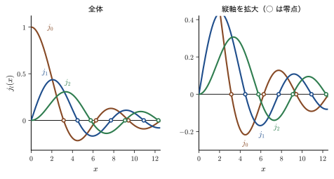
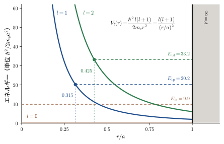
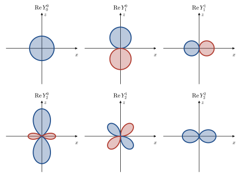
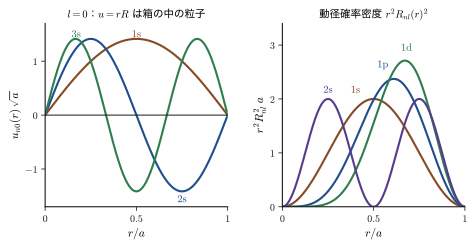
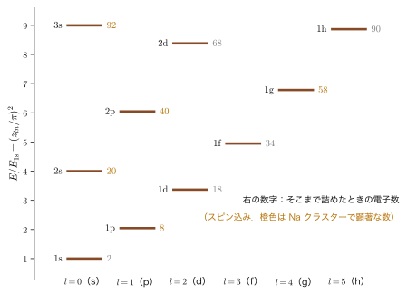
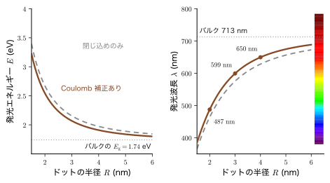
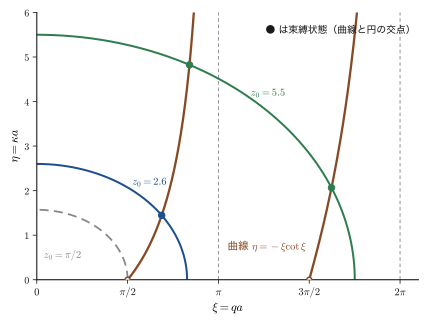
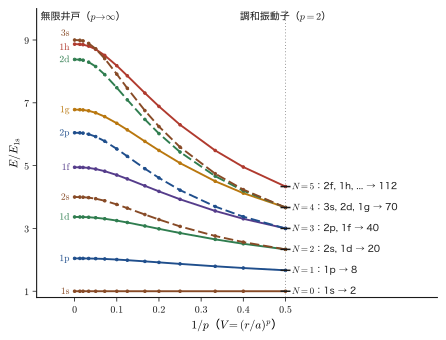

第14章3 次元の Schrödinger 方程式 — 変数分離と球対称の井戸
原子の中の電子，半導体の微結晶（量子ドット）の中の電子，金属の小さな粒（クラスター）の中の電子，そして原子核の中の陽子と中性子．これらに共通しているのは，粒子が球の形をした領域に閉じ込められているという点である．前章までは，粒子が 1 本の直線（$x$ 軸）の上だけを動くとして Schrödinger（シュレーディンガー）方程式を解いてきたが，現実の物質は 3 次元であり，原子も原子核もナノ粒子も球に近い．この章では，1 次元で身につけた考え方を 3 次元へ広げ，球の形をした箱に閉じ込められた粒子の問題——球対称の無限井戸——を，一行も飛ばさずに最後まで解く．
古典力学では，球形の容器の中で壁と衝突を繰り返す粒子は，壁で反射するたびに向きを変える．しかし壁が粒子に及ぼす力は壁に垂直で，動径方向（中心 O へ向かう向き）を向いているので，O のまわりの角運動量 $\bm{L}=\bm{r}\times\bm{p}$ は変わらない（中心力．AD 03 第8章 8.1）．そのため運動エネルギーは「動径方向の運動」と「O のまわりの回転（遠心力）」の 2 つに分けて考えられる．量子力学でもこの分解は生き残る．波動関数を $\psi=R(r)\,\Theta(\theta)\,\Phi(\varphi)$ の積の形において変数分離すると，Schrödinger 方程式は 3 本の常微分方程式に分かれる．角度に関する 2 本は，ポテンシャルが $r$ だけの関数でありさえすればどんな形でも同じで（水素原子でもまったく同じ），動径方程式にだけポテンシャルが入る．動径方程式には遠心力の項 $\hbar^2l(l+1)/(2m_{\mathrm e}r^2)$ が現れる．古典力学では $\bm{L}$ の大きさが連続的な値をとれたのに対し，量子力学では整数 $l=0,1,2,\ldots$ で決まるとびとびの値だけが許される．これが古典物理との決定的な違いである．
この章のもう 1 つの目的は，これからの章で何度も使う道具をそろえることである．角度方程式の解として球面調和関数 $Y_l^m(\theta,\varphi)$ が現れる．本書ではここで初めて定義し，位相のとり方の約束（Condon–Shortley の規約．14.5.4 節）もここで決める．動径方程式の解としては球 Bessel 関数 $j_l(x)$ が現れる．半整数次の Bessel 関数は，実は $\sin$ と $\cos$ で書ける初等関数なので，怖がる必要はない．こうして得られる球対称の無限井戸の準位 $E_{ln}=\hbar^2z_{ln}^2/(2m_{\mathrm e}a^2)$（$z_{ln}$ は $j_l$ の零点）は，半導体量子ドットの発光色の大きさ依存性や，金属クラスターの「魔法数」を説明する出発点になる．次の第15章では，同じ変数分離を水素原子のポテンシャルに適用する．また，$l$ や $m$ が「角運動量の大きさと $z$ 成分」であることは，第IV部（第21章から）で演算子の代数として学ぶ．
- 3 次元の Schrödinger 方程式を，直方体の箱で変数分離して解き，立方体の縮退が対称性の反映であることを説明できること
- 球座標 $(r,\theta,\varphi)$ と体積要素 $r^2\sin\theta\,\dd r\,\dd\theta\,\dd\varphi$，ラプラシアン $\nabla^2$ の 3 つの項の意味
- $\psi=R\Theta\Phi$ を代入して分離定数 $l(l+1)$，$m^2$ を導入し，動径方程式・天頂角方程式・方位角方程式の 3 本を導けること．角度部分は水素原子と共通であること
- $R=X/\sqrt{r}$ で動径方程式を Bessel の方程式に直し，級数解 $J_{l+1/2}$ と球 Bessel 関数 $j_l$ を求め，$u=rR$ による 1 次元的な見方と遠心力ポテンシャルを理解すること
- 角度方程式の解 $\Theta(\theta)$（Legendre 陪関数），$\Phi(\varphi)=C_0e^{im\varphi}$ から球面調和関数 $Y_l^m$ を定義し，規格化定数を決めること
- 境界条件 $j_l(ka)=0$ から準位 $E_{ln}=\hbar^2z_{ln}^2/(2m_{\mathrm e}a^2)$ と波動関数 $\psi_{nlm}$ を求め，準位の並びと縮退度 $2l+1$ を説明すること
- 量子ドットの発光色（Brus の式），金属クラスターの魔法数，有限球井戸の束縛状態が現れる条件 $V_0a^2\gt\pi^2\hbar^2/(8m_{\mathrm e})$，3 次元調和振動子の準位 $(N+\tfrac32)\hbar\omega$ を見積もれること
もとにしたノート：望月泰英『物理学ノート 量子力学2』 pp. 39–40．
14.1 3 次元の Schrödinger 方程式と直方体の箱 — 縮退と「なぜ球座標か」
14.1.1 1 次元から 3 次元へ
前章までは，粒子が $x$ 軸の上だけを動く問題を解いてきた．3 次元では，位置が $\bm{r}=(x,y,z)$ になり，波動関数は 3 つの変数の関数 $\psi(\bm{r})=\psi(x,y,z)$ になる．運動量演算子は $\hat{\bm{p}}=-i\hbar\nabla=-i\hbar\left(\dfrac{\partial}{\partial x},\dfrac{\partial}{\partial y},\dfrac{\partial}{\partial z}\right)$ で，運動エネルギーは $\hat{\bm{p}}\cdot\hat{\bm{p}}/(2m_{\mathrm e})$，すなわち $\hat{p}_x^2+\hat{p}_y^2+\hat{p}_z^2=-\hbar^2\left(\dfrac{\partial^2}{\partial x^2}+\dfrac{\partial^2}{\partial y^2}+\dfrac{\partial^2}{\partial z^2}\right)$ を $2m_{\mathrm e}$ で割ったものになる（第9章 9.2）．括弧の中をラプラシアン（Laplacian）$\nabla^2$ と書くと，時間を含まない Schrödinger 方程式は次のようになる．
\begin{equation} -\frac{\hbar^2}{2m_{\mathrm e}}\nabla^2\psi(\bm{r})+V(\bm{r})\,\psi(\bm{r})=E\,\psi(\bm{r}),\qquad \nabla^2=\frac{\partial^2}{\partial x^2}+\frac{\partial^2}{\partial y^2}+\frac{\partial^2}{\partial z^2} \label{eq:14-tise3d} \end{equation}$V(\bm{r})$ は位置エネルギー，$E$ は求めたい全エネルギー（固有値）である．Born の確率解釈も 1 次元と同じ形で拡張される：$\abs{\psi(\bm{r})}^2\dd V$ は，位置 $\bm{r}$ のまわりの小さな体積 $\dd V$ の中に粒子を見いだす確率であり，粒子が空間のどこかにいる確率は 1 だから，規格化条件は $\displaystyle\int\abs{\psi}^2\dd V=1$ となる．
記号：この章では粒子の質量を $m_{\mathrm e}$ と書く
この章では，粒子の質量を（電子とは限らなくても）$m_{\mathrm e}$ と書く．磁気量子数 $m$（14.3 節）と紛れないようにするための書き方である．半導体の中の電子には有効質量 $m_{\mathrm e}^*$（第11章）を，原子核の中の陽子と中性子には換算質量を代入すれば，同じ式がそのまま使える．ただし，14.7.1 節の量子ドットでは $m_{\mathrm e}$ は真空中の電子の質量を表し，結晶中の電子と正孔の有効質量を $m_{\mathrm e}^*$，$m_{\mathrm h}^*$ と書く（添字 e は「電子」の意味）．また，波数は前章までと同じく $k=\sqrt{2m_{\mathrm e}E}/\hbar$ と書く．
ポテンシャルが 0 の領域（井戸の内部）では，式 \eqref{eq:14-tise3d} は
\begin{equation} -\frac{\hbar^2}{2m_{\mathrm e}}\nabla^2\psi=E\psi \qquad\text{すなわち}\qquad \nabla^2\psi+k^2\psi=0\quad\left(k^2=\frac{2m_{\mathrm e}E}{\hbar^2}\right) \label{eq:14-helm} \end{equation}となる．左の式は 1 次元の $-\dfrac{\hbar^2}{2m}\psi''=E\psi$（第10章 10.1）の $\psi''$ を $\nabla^2\psi$ に置き換えただけである．右の式は Helmholtz（ヘルムホルツ）方程式とよばれ，音波が容器の中で共鳴するときの方程式と同じ形をしている．この方程式を，ポテンシャルの壁の形に合わせて解くのがこの章の目的である．まず，壁が直方体の場合を復習しよう．
14.1.2 直方体の箱 — 1 次元の解の積
辺の長さが $L_x,L_y,L_z$ の直方体の箱 $0\le x\le L_x$，$0\le y\le L_y$，$0\le z\le L_z$ の内側では $V=0$，外側では $V=\infty$ とする（第10章の 3 次元の箱の辺 $L_1,L_2,L_3$ と量子数 $(n_1,n_2,n_3)$ を，ここでは軸がわかる $L_x,L_y,L_z$ と $(n_x,n_y,n_z)$ と書く）．壁の外では $\psi=0$ で，波動関数の連続性から壁の面上でも $\psi=0$ である（第10章 10.1.2）．内側で式 \eqref{eq:14-helm} を変数分離する．すなわち，解が 1 変数だけの関数の積 $\psi(x,y,z)=X(x)\,Y(y)\,Z(z)$ の形をしていると仮定してみる．
導出：直方体の箱の変数分離
$\psi=XYZ$ を $-\dfrac{\hbar^2}{2m_{\mathrm e}}\nabla^2\psi=E\psi$ に代入する．$\dfrac{\partial^2\psi}{\partial x^2}=X''YZ$ など（$Y,Z$ は $x$ について定数）なので，
$$ -\frac{\hbar^2}{2m_{\mathrm e}}\left(X''YZ+XY''Z+XYZ''\right)=E\,XYZ $$となる．両辺を $XYZ$ で割ると，
$$ -\frac{\hbar^2}{2m_{\mathrm e}}\left(\frac{X''}{X}+\frac{Y''}{Y}+\frac{Z''}{Z}\right)=E $$を得る．左辺の 3 つの項は，それぞれ $x$ だけ，$y$ だけ，$z$ だけの関数である．3 つの独立な変数 $x,y,z$ をどう動かしても和が定数 $E$ に保たれるためには，各項がそれぞれ定数でなければならない（たとえば $y,z$ を固定したまま $x$ だけ動かすと，第 2 項と第 3 項は変わらないから，第 1 項も変われない）．そこで，
$$ -\frac{\hbar^2}{2m_{\mathrm e}}\frac{X''}{X}=E_x,\qquad -\frac{\hbar^2}{2m_{\mathrm e}}\frac{Y''}{Y}=E_y,\qquad -\frac{\hbar^2}{2m_{\mathrm e}}\frac{Z''}{Z}=E_z,\qquad E=E_x+E_y+E_z $$とおく．これらはそれぞれ，壁で 0 になる 1 次元の箱の中の粒子の方程式 $-\dfrac{\hbar^2}{2m_{\mathrm e}}X''=E_xX$，$X(0)=X(L_x)=0$ そのものなので，解は第10章の定理10.2より $X=\sqrt{2/L_x}\,\sin\dfrac{n_x\pi x}{L_x}$，$E_x=\dfrac{n_x^2\pi^2\hbar^2}{2m_{\mathrm e}L_x^2}$（$n_x=1,2,\dots$）である．$Y,Z$ も同様である．
（導出終わり）
定理14.1 直方体の箱の中の粒子
体積 $V=L_xL_yL_z$ の直方体の箱の中の質量 $m_{\mathrm e}$ の粒子の固有関数とエネルギーは，$n_x,n_y,n_z=1,2,3,\dots$ を量子数として
\begin{equation} \psi_{n_xn_yn_z}=\sqrt{\frac{8}{V}}\sin\frac{n_x\pi x}{L_x}\sin\frac{n_y\pi y}{L_y}\sin\frac{n_z\pi z}{L_z},\qquad E=\frac{\pi^2\hbar^2}{2m_{\mathrm e}}\left(\frac{n_x^2}{L_x^2}+\frac{n_y^2}{L_y^2}+\frac{n_z^2}{L_z^2}\right)=\frac{h^2}{8m_{\mathrm e}}\left(\frac{n_x^2}{L_x^2}+\frac{n_y^2}{L_y^2}+\frac{n_z^2}{L_z^2}\right) \label{eq:14-box3d} \end{equation}である．規格化定数 $\sqrt{8/V}$ は，3 つの 1 次元の規格化定数 $\sqrt{2/L_x}\sqrt{2/L_y}\sqrt{2/L_z}$ の積である．
1 次元 → 2 次元（第10章 10.3）→ 3 次元と，次元を増やすたびに量子数が 1 つずつ増え，エネルギーが「各方向のエネルギーの和」になる．これが，ポテンシャルが $V=V_x(x)+V_y(y)+V_z(z)$ の形に書けるときの変数分離の一般的な帰結である．
14.1.3 立方体の縮退 — 対称性が縮退をつくる
立方体 $L_x=L_y=L_z=L$ では，1 次元の基底エネルギー $E_1=\dfrac{h^2}{8m_{\mathrm e}L^2}=\dfrac{\pi^2\hbar^2}{2m_{\mathrm e}L^2}$ を単位として $E=(n_x^2+n_y^2+n_z^2)\,E_1$ となる．たとえば $(n_x,n_y,n_z)=(2,1,1)$，$(1,2,1)$，$(1,1,2)$ はどれも $E=6E_1$ で，波動関数は互いに異なるのにエネルギーが等しい．エネルギーの等しい線形独立な固有状態の個数を縮退度（degeneracy）という．$n_x^2+n_y^2+n_z^2=6$ の準位は 3 重に，$14=1^2+2^2+3^2$ の準位は $(1,2,3)$ の 6 通りの入れ替えで 6 重に縮退する（第10章の表10.3）．
この縮退は，立方体の 3 つの軸 $x,y,z$ が対等であること（軸を入れ替えても箱が同じ形に見えること）の反映である．このような対称性に由来する縮退に加えて，数の偶然による縮退もある．たとえば $27=3^2+3^2+3^2=5^2+1^2+1^2$ なので，$(3,3,3)$ と $(5,1,1)$ とその入れ替え（3 通り）を合わせた 4 個の状態が同じエネルギーをもつ．$(3,3,3)$ は軸を入れ替えても自分自身に戻るので，$(5,1,1)$ の仲間とは対称性では結びつかない．
対称性が縮退の原因なら，対称性を少し崩せば縮退はほどけるはずである．次の例題で確かめよう．固体中の原子のまわりの電子が，結晶場によって準位を分裂させる（配位子場，第44章）のも，同じ原理である．縮退が摂動でほどける様子は，第V部（第28章）で系統的に学ぶ．
例題14.1 立方体の箱を 1 方向に伸ばすと縮退はほどける
一辺 $L=1\ \mathrm{nm}$ の立方体の箱の中の電子の準位のうち，$E=3E_1$（$(1,1,1)$）と $E=6E_1$（3 重）に注目する．箱を $z$ 方向だけ 1.2 倍に伸ばして $L_x=L_y=L$，$L_z=1.2L$ にしたとき，これらの準位はどうなるか．$E_1=h^2/(8m_{\mathrm e}L^2)=0.3760\ \mathrm{eV}$ を用いて，エネルギーの値を求めよ．
解答 式 \eqref{eq:14-box3d} で $L_x=L_y=L$，$L_z=1.2L$ とすると，
$$ E=E_1\left(n_x^2+n_y^2+\frac{n_z^2}{1.2^2}\right)=E_1\left(n_x^2+n_y^2+\frac{n_z^2}{1.44}\right) $$である．$(1,1,1)$ は $E=E_1\left(2+\dfrac{1}{1.44}\right)=2.694\,E_1=1.013\ \mathrm{eV}$（立方体の $3E_1=1.128\ \mathrm{eV}$ より低い．箱が広がったので閉じ込めが弱くなった）．
立方体で 3 重に縮退していた $E=6E_1$ の準位は，次の 2 つに分かれる：
- $(1,1,2)$：$E=E_1\left(2+\dfrac{4}{1.44}\right)=4.778\,E_1=1.796\ \mathrm{eV}$（1 重）
- $(2,1,1)$，$(1,2,1)$：$E=E_1\left(5+\dfrac{1}{1.44}\right)=5.694\,E_1=2.141\ \mathrm{eV}$（2 重）
$x$ と $y$ の入れ替えに対する対称性は残っているので，$(2,1,1)$ と $(1,2,1)$ は縮退したままである．一方，$z$ 方向だけが特別になったので，$(1,1,2)$ は別のエネルギーをもつ．分裂の大きさは $(5.694-4.778)E_1=0.917\,E_1=0.345\ \mathrm{eV}$ で，伸ばす前の準位間隔と比べても無視できない大きさである．
結果は図14.1 にまとめてある．上の $E=9E_1$ と $11E_1$ の準位も，同様に 2 重＋1 重に分かれる．「3 重」が「2 重＋1 重」に分かれるのは，立方体の 3 つの軸の対等性が，$z$ 軸だけ別扱いになる対称性（$x\leftrightarrow y$ の入れ替えだけが残る）に下がったからである．
14.1.4 状態を数える
箱が大きいと，準位は非常に密に並ぶ．そのとき重要なのは個々の準位ではなく，「エネルギー $E$ 以下に何個の状態があるか」である．3 次元の箱では，$k_x=n_x\pi/L_x$ などとおくと，状態は $(k_x,k_y,k_z)$ 空間の格子点（間隔 $\pi/L_x,\pi/L_y,\pi/L_z$）に 1 個ずつ対応する．エネルギー $E$ 以下の状態は $k\le\sqrt{2m_{\mathrm e}E}/\hbar$ の球の内側で，$k_x,k_y,k_z\gt0$ の 8 分の 1 の部分に格子点が 1 個ずつ並ぶから，
$$ N(E)=\frac{1}{8}\cdot\frac{4\pi k^3/3}{\pi^3/(L_xL_yL_z)}=\frac{V\,k^3}{6\pi^2}=\frac{V\,(2m_{\mathrm e}E)^{3/2}}{6\pi^2\hbar^3} $$となる（スピンの自由度は含めていない）．状態密度 $g(E)=\dd N/\dd E=\dfrac{V(2m_{\mathrm e})^{3/2}}{4\pi^2\hbar^3}\sqrt{E}$ である．箱が大きい（$E$ が十分大きい）とき，この主要項は箱の形によらず，体積 $V$ だけで決まる（形に依存する補正は，表面積に比例する項などとして，これより小さくなる．詳しくは第10章 10.7 節，AD 03 第52章 52.8，固体物理学（AD 06，目次）を参照）．
14.1.5 なぜ球座標が必要なのか
直方体の箱は，壁の面 $x=0,L_x$，$y=0,L_y$，$z=0,L_z$ が座標軸に平行なので，変数分離が簡単にできた．しかし球の壁 $\sqrt{x^2+y^2+z^2}=a$ は，$x,y,z$ を 3 つとも含む．たとえば $z$ の値をとめたときの $x$ の許される範囲が $y$ と $z$ に依存して変わってしまうため，境界条件が「$X$ だけ」「$Y$ だけ」「$Z$ だけ」の条件に分かれてくれない．積の形の解は，直交座標では球の壁を表現できないのである．
そこで，壁が座標面の 1 つになるように座標を選び直す．球の壁は，原点からの距離 $r$ が一定（$r=a$）の面である．原点からの距離 $r$ と 2 つの角度 $(\theta,\varphi)$ を座標にとる球座標を使えば，壁の位置は $r=a$ の 1 つの条件だけで表される．球座標で変数分離すると，動径方向 $R(r)$ にだけ境界条件がかかり，角度方向 $Y(\theta,\varphi)$ は球面上の閉じた問題になる．次節でその設定を作る．
球座標が役に立つのは，壁が球の場合だけではない．ポテンシャルが原点からの距離だけの関数 $V(r)$ で表される中心力ポテンシャルであれば，方程式の対称性が球の対称性と一致する．原子の中の電子（Coulomb ポテンシャル $-e_0^2/(4\pi\varepsilon_0r)$），原子核の中の核子，調和ポテンシャル $\tfrac12m_{\mathrm e}\omega^2r^2$ の 3 次元振動子，そしてこの章の球の井戸は，すべて中心力ポテンシャルである．
14.2 球対称の無限井戸 — 問題の設定と球座標
14.2.1 問題：球型の箱の中の粒子
1 次元の無限井戸（第10章）を 3 次元の球に置き換えた次のポテンシャルを考える．
定義14.1 無限球型ポテンシャル（球型の箱）
正の定数 $a$ に対して，原点からの距離 $r=\sqrt{x^2+y^2+z^2}$ だけで決まる
\begin{equation} V(r)=\begin{cases}0 & (0\le r\le a)\\[1mm] \infty & (r\gt a)\end{cases} \label{eq:14-Vsphere} \end{equation}を無限球型ポテンシャル（球型の箱，spherical infinite well）という．$a$ を井戸の半径とよぶ．
問題 球対称なポテンシャル \eqref{eq:14-Vsphere} の中の，質量 $m_{\mathrm e}$ の粒子のエネルギー（固有値）と波動関数を求めよ．
前章までの 1 次元の無限井戸と同じく，壁の外（$r\gt a$）では $\psi=0$ で，波動関数の連続性から壁の面の上でも $\psi=0$ である：
\begin{equation} \psi(a,\theta,\varphi)=0\qquad\text{（すべての方向 }(\theta,\varphi)\text{ について）} \label{eq:14-bc} \end{equation}これが境界条件である．さらに，球の中心 $r=0$ でも $\psi$ は有限で，Schrödinger 方程式を満たさなければならない（詳しくは 14.4.2 節）．
記号：井戸の半径 $a$ と 1 次元の幅 $L$ の関係
第10章では，1 次元の井戸の幅を $L$ とし，対称な座標のときの半幅を $a$（$L=2a$）と書いた．本章の $a$ は，それと同じ意味の「中心から壁までの距離」，すなわち球の半径である．直径は $2a$ で，1 次元の幅 $L$ に対応するのは $2a$ である．AD 02 第48章の無限球型ポテンシャルの半径 $a$ とも同じである．ただし，14.6 節で見るように，$l=0$ の状態のエネルギーは，幅 $a$（直径ではなく半径）の 1 次元の箱のエネルギーと一致する．混同しないこと．
14.2.2 球座標と体積要素
球の壁を扱いやすくするために，位置を原点からの距離 $r$ と 2 つの角度で表す．図14.2(a) のように，点 P の原点 O からの距離を $r$（$r\ge0$），$z$ 軸と OP のなす角を $\theta$（$0\le\theta\le\pi$，天頂角），OP を $xy$ 平面へ落とした線と $x$ 軸のなす角を $\varphi$（$0\le\varphi\lt2\pi$，方位角）とする．直交座標との関係は，
\begin{equation} x=r\sin\theta\cos\varphi,\qquad y=r\sin\theta\sin\varphi,\qquad z=r\cos\theta \label{eq:14-sph} \end{equation}である（$r\sin\theta$ は P から $z$ 軸までの距離で，それを $x$ 軸方向と $y$ 軸方向に分けたのが $\cos\varphi,\sin\varphi$）．方位角は $\varphi$ と書き，波動関数や軌道を表す $\phi$ とは区別する（本書の約束）．
積分に必要な体積要素は，次のように求める．$r$ を $\dd r$ だけ増やすと，P は動径方向に $\dd r$ だけ動く．$\theta$ を $\dd\theta$ だけ増やすと，P は半径 $r$ の大円の上を動き，その長さは弧長の公式（半径 × 角）で $r\,\dd\theta$ である．$\varphi$ を $\dd\varphi$ だけ増やすと，P は $z$ 軸のまわりの半径 $r\sin\theta$ の円の上を動き，その長さは $r\sin\theta\,\dd\varphi$ である．この 3 つの方向は互いに直交しているから，微小な直方体の体積は 3 辺の積で，
\begin{equation} \dd V=r^2\sin\theta\,\dd r\,\dd\theta\,\dd\varphi \label{eq:14-dV} \end{equation}である．積分範囲は $0\le r\lt\infty$，$0\le\theta\le\pi$，$0\le\varphi\le2\pi$ で，規格化条件は
\begin{equation} \int_0^{2\pi}\!\!\int_0^{\pi}\!\!\int_0^{\infty}\abs{\psi(r,\theta,\varphi)}^2\,r^2\sin\theta\,\dd r\,\dd\theta\,\dd\varphi=1 \label{eq:14-norm} \end{equation}となる．球型の箱では壁の外で $\psi=0$ なので，$r$ の積分は実質的に $0$ から $a$ までである．
例題14.2 体積要素から球の体積と立体角を求める
体積要素 \eqref{eq:14-dV} を使って，半径 $a$ の球の体積が $\dfrac{4\pi}{3}a^3$ になることを示せ．また，$r$ を固定して角度だけを積分した $\displaystyle\int_0^{2\pi}\!\!\int_0^\pi\sin\theta\,\dd\theta\,\dd\varphi$（全立体角）の値を求めよ．
解答 被積分関数 $r^2\sin\theta$ は，$r$ だけの関数と $\theta$ だけの関数の積で，$\varphi$ を含まないから，3 重積分は 3 つの 1 次元積分の積に分かれる．
$$ V=\int_0^{a}r^2\dd r\cdot\int_0^{\pi}\sin\theta\,\dd\theta\cdot\int_0^{2\pi}\dd\varphi =\frac{a^3}{3}\cdot\Bigl[-\cos\theta\Bigr]_0^{\pi}\cdot2\pi=\frac{a^3}{3}\cdot2\cdot2\pi=\frac{4\pi}{3}a^3 $$（$[-\cos\theta]_0^\pi=-(-1)+1=2$）．確かに球の体積の公式に一致する．角度の積分だけをとった
$$ \int_0^{2\pi}\!\!\int_0^\pi\sin\theta\,\dd\theta\,\dd\varphi=2\cdot2\pi=4\pi $$は，単位球面（半径 1 の球面）の面積であり，全立体角とよぶ．半径 $r$ の球面の面積が $4\pi r^2$ であることも，$\displaystyle\int r^2\dd\Omega\ (\dd\Omega=\sin\theta\,\dd\theta\,\dd\varphi)$ から分かる．今後，角度部分の体積要素 $\sin\theta\,\dd\theta\,\dd\varphi$ を $\dd\Omega$ と書くことがある．
14.2.3 球座標のラプラシアン
直交座標のラプラシアン $\nabla^2=\partial_x^2+\partial_y^2+\partial_z^2$ を球座標 \eqref{eq:14-sph} で書き直すと，次の形になる．導出は AD 02 第44章 44.4 で行っているので，ここでは結果を使う．
\begin{equation} \nabla^2=\frac{1}{r^2}\frac{\partial}{\partial r}\!\left(r^2\frac{\partial}{\partial r}\right)+\frac{1}{r^2\sin\theta}\frac{\partial}{\partial\theta}\!\left(\sin\theta\,\frac{\partial}{\partial\theta}\right)+\frac{1}{r^2\sin^2\theta}\frac{\partial^2}{\partial\varphi^2} \label{eq:14-lap} \end{equation}3 つの項の意味は，体積要素の 3 辺の長さから読み取れる．
- 第 1 項は動径方向の広がり方を表す．$\dfrac{1}{r^2}\dfrac{\partial}{\partial r}\left(r^2\dfrac{\partial}{\partial r}\right)=\dfrac{\partial^2}{\partial r^2}+\dfrac{2}{r}\dfrac{\partial}{\partial r}$ と展開でき，第 2 項 $\dfrac{2}{r}\dfrac{\partial}{\partial r}$ は，球殻の面積 $4\pi r^2$ が外側ほど大きいことから生じる（1 次元の $\partial^2/\partial x^2$ にはない項）．
- 第 2 項は $\theta$ 方向の変化を表す．$\theta$ 方向に動く距離は $r\,\dd\theta$ なので，2 回微分すると $1/r^2$ がつく．$\sin\theta$ は，円周の長さが緯度によって変わることの反映である．
- 第 3 項は $\varphi$ 方向の変化を表す．$\varphi$ 方向に動く距離は $r\sin\theta\,\dd\varphi$ なので，$\dfrac{1}{r^2\sin^2\theta}\dfrac{\partial^2}{\partial\varphi^2}$ となる．
第 2 項と第 3 項は，どちらも $\dfrac{1}{r^2}$ に，角度だけを含む演算子 $\Lambda\equiv\dfrac{1}{\sin\theta}\dfrac{\partial}{\partial\theta}\left(\sin\theta\dfrac{\partial}{\partial\theta}\right)+\dfrac{1}{\sin^2\theta}\dfrac{\partial^2}{\partial\varphi^2}$ を掛けたものである．すなわち $\nabla^2=\dfrac{1}{r^2}\dfrac{\partial}{\partial r}\left(r^2\dfrac{\partial}{\partial r}\right)+\dfrac{1}{r^2}\Lambda$ で，「動径部分」と「角度部分」に分かれている．$-\hbar^2\Lambda$ が角運動量の 2 乗の演算子 $\hat{L}^2$ であることは，第IV部で示す（第22章）．
例題14.3 球座標のラプラシアンの検算
式 \eqref{eq:14-lap} を使って，(a) $r^2=x^2+y^2+z^2$ と (b) $z=r\cos\theta$ に $\nabla^2$ を作用させよ．直交座標で計算した結果と比べよ．
解答 (a) $r^2$ は $\theta,\varphi$ によらないから，第 2 項と第 3 項は 0 である．第 1 項は $\dfrac{1}{r^2}\dfrac{\partial}{\partial r}\left(r^2\cdot2r\right)=\dfrac{1}{r^2}\cdot6r^2=6$．直交座標では $\nabla^2(x^2+y^2+z^2)=2+2+2=6$ で一致する．
(b) $z=r\cos\theta$ について，第 1 項は $\dfrac{1}{r^2}\dfrac{\partial}{\partial r}\left(r^2\cos\theta\right)=\dfrac{2\cos\theta}{r}$．第 2 項は $\dfrac{1}{r^2\sin\theta}\dfrac{\partial}{\partial\theta}\left(\sin\theta\cdot(-r\sin\theta)\right)=\dfrac{-r\cdot2\sin\theta\cos\theta}{r^2\sin\theta}=-\dfrac{2\cos\theta}{r}$．第 3 項は $\varphi$ を含まないので 0．したがって $\nabla^2z=\dfrac{2\cos\theta}{r}-\dfrac{2\cos\theta}{r}=0$．直交座標では $\nabla^2z=\dfrac{\partial^2z}{\partial z^2}=0$ で一致する．
ここで第 1 項と第 2 項がちょうど打ち消し合ったことに注意してほしい．$z$ のような 1 次関数は $\nabla^2$ で 0 になる（$\nabla^2f=0$ を満たす関数を調和関数という）が，そのためには動径部分の $\dfrac{2}{r}\dfrac{\partial}{\partial r}$ の項と角度部分が必要であることが，この検算から分かる．
14.2.4 球の内側の Schrödinger 方程式
球の内側 $0\le r\le a$ では $V=0$ なので，式 \eqref{eq:14-helm} と \eqref{eq:14-lap} から次の方程式が得られる．
\begin{equation} \frac{1}{r^2}\frac{\partial}{\partial r}\!\left(r^2\frac{\partial\psi}{\partial r}\right)+\frac{1}{r^2\sin\theta}\frac{\partial}{\partial\theta}\!\left(\sin\theta\,\frac{\partial\psi}{\partial\theta}\right)+\frac{1}{r^2\sin^2\theta}\frac{\partial^2\psi}{\partial\varphi^2}+\frac{2m_{\mathrm e}E}{\hbar^2}\,\psi=0 \label{eq:14-sphere-pde} \end{equation}（$-\dfrac{\hbar^2}{2m_{\mathrm e}}\nabla^2\psi=E\psi$ の両辺に $-\dfrac{2m_{\mathrm e}}{\hbar^2}$ を掛けて移項した）．これは，未知関数 $\psi(r,\theta,\varphi)$ が 3 つの変数の関数である偏微分方程式で，直接解くのは難しい．次節では，直方体の箱と同じように，$\psi$ を 1 変数の関数の積とおいて，偏微分方程式を 3 本の常微分方程式に分解する．
14.3 変数分離 — 3 本の常微分方程式へ
14.3.1 $\psi=R\,\Theta\,\Phi$ を代入する
球座標の各変数 $r,\theta,\varphi$ に 1 つずつ関数を対応させ，解を積の形
\begin{equation} \psi(r,\theta,\varphi)=R(r)\,\Theta(\theta)\,\Phi(\varphi) \label{eq:14-sep} \end{equation}と仮定する（変数分離．直方体の箱で $\psi=XYZ$ とおいたのと同じ考え方）．$R$ は $r$ だけの関数，$\Theta$ は $\theta$ だけの関数，$\Phi$ は $\varphi$ だけの関数なので，たとえば $\dfrac{\partial\psi}{\partial r}=R'\Theta\Phi$（$R'=\dd R/\dd r$）のように，偏微分は自分の変数の関数にだけ作用し，残りは定数として外に出る．式 \eqref{eq:14-sphere-pde} の 4 つの項を 1 つずつ計算すると，
\begin{align*} \frac{1}{r^2}\frac{\partial}{\partial r}\left(r^2\frac{\partial\psi}{\partial r}\right)&=\Theta\Phi\cdot\frac{1}{r^2}\left(r^2R'\right)'=\Theta\Phi\left(R''+\frac{2}{r}R'\right)\\[1mm] \frac{1}{r^2\sin\theta}\frac{\partial}{\partial\theta}\left(\sin\theta\frac{\partial\psi}{\partial\theta}\right)&=\frac{R\Phi}{r^2\sin\theta}\left(\sin\theta\,\Theta'\right)'=\frac{R\Phi}{r^2}\left(\Theta''+\frac{\cos\theta}{\sin\theta}\Theta'\right)\\[1mm] \frac{1}{r^2\sin^2\theta}\frac{\partial^2\psi}{\partial\varphi^2}&=\frac{R\Theta}{r^2\sin^2\theta}\,\Phi''\\[1mm] \frac{2m_{\mathrm e}E}{\hbar^2}\,\psi&=k^2R\Theta\Phi \end{align*}となる（1 行目の $(r^2R')'=r^2R''+2rR'$，2 行目の $(\sin\theta\,\Theta')'=\sin\theta\,\Theta''+\cos\theta\,\Theta'$ は積の微分の公式である．また $k^2\equiv2m_{\mathrm e}E/\hbar^2$ とおいた．$k$ は井戸の内側での波数である．$\varepsilon^2$ とおく書き方もあるが，本書では前章までの記号 $k$ を使い，$\varepsilon$ は 14.7.4 節で無次元のエネルギーの記号に使う）．4 つの項の和は 0 だから，両辺を $\psi=R\Theta\Phi$ で割り，さらに $r^2$ を掛けると，
\begin{equation} r^2\frac{R''}{R}+2r\frac{R'}{R}+k^2r^2+\frac{\Theta''}{\Theta}+\frac{1}{\tan\theta}\frac{\Theta'}{\Theta}+\frac{1}{\sin^2\theta}\frac{\Phi''}{\Phi}=0 \label{eq:14-sep-div} \end{equation}を得る（$\cos\theta/\sin\theta=1/\tan\theta$）．ここで，$\psi$ で割る操作は $\psi\ne0$ の点で行っている．$\psi=0$ となる点（節）では方程式は自明に成り立つので，問題はない．
14.3.2 動径部分と角度部分の分離 — 分離定数 $l(l+1)$
式 \eqref{eq:14-sep-div} の最初の 3 項 $r^2\dfrac{R''}{R}+2r\dfrac{R'}{R}+k^2r^2$ は $r$ だけの関数で，残りの 3 項 $\dfrac{\Theta''}{\Theta}+\dfrac{1}{\tan\theta}\dfrac{\Theta'}{\Theta}+\dfrac{1}{\sin^2\theta}\dfrac{\Phi''}{\Phi}$ は $\theta$ と $\varphi$ だけの関数である．「$r$ だけの関数」＋「$\theta,\varphi$ だけの関数」＝ 0 が，3 つの変数をどう動かしても成り立つには，どちらも定数でなければならない（$\theta,\varphi$ を固定して $r$ だけ動かしても和は 0 のままだから，$r$ の部分は動かせない）．その定数を $\lambda$ とおく：
$$ r^2\frac{R''}{R}+2r\frac{R'}{R}+k^2r^2=\lambda,\qquad \frac{\Theta''}{\Theta}+\frac{1}{\tan\theta}\frac{\Theta'}{\Theta}+\frac{1}{\sin^2\theta}\frac{\Phi''}{\Phi}=-\lambda $$これを分離定数（separation constant）という．$\lambda$ をただの定数のままにしておいてもよいのだが，あとの計算が楽になるように，最初から
$$ \lambda=l(l+1) $$とおくことにする．
問い：なぜ分離定数を $l(l+1)$ とおくのか
$\lambda$ は，今のところ何の制限もない定数である．しかし，14.5 節で見るように，角度の方程式が「$\theta=0$ と $\theta=\pi$（極）で $\Theta$ が有限」という条件のもとで解をもつのは，$\lambda$ が $0,\ 2,\ 6,\ 12,\ \dots$ すなわち $l(l+1)$（$l=0,1,2,\dots$）の形の値のときに限られる．最終的に $l(l+1)$ の形の数しか許されないのだから，最初から $l(l+1)$ とおいておけば，$l$ を整数として扱える．また，$\lambda\ge0$ の実数はどれも $l=\dfrac{\sqrt{1+4\lambda}-1}{2}\ge0$ を使って $\lambda=l(l+1)$ と書けるので，こうおいても一般性は失われない．次の例題14.4 で，$\lambda=2=1\times2$ が実際に出てくることを確かめよう．また，この量は角運動量の大きさの 2 乗を $\hbar^2$ で割ったものになる（14.3.5 節）．今は「あとで楽になる置き方」と思っておけばよい．
14.3.3 天頂角部分と方位角部分の分離 — 分離定数 $m^2$
角度の式 $\dfrac{\Theta''}{\Theta}+\dfrac{1}{\tan\theta}\dfrac{\Theta'}{\Theta}+\dfrac{1}{\sin^2\theta}\dfrac{\Phi''}{\Phi}=-l(l+1)$ の両辺に $\sin^2\theta$ を掛けて移項すると，
$$ \sin^2\theta\frac{\Theta''}{\Theta}+\sin\theta\cos\theta\frac{\Theta'}{\Theta}+l(l+1)\sin^2\theta=-\frac{\Phi''}{\Phi} $$（$\sin^2\theta/\tan\theta=\sin\theta\cos\theta$）となる．左辺は $\theta$ だけの，右辺は $\varphi$ だけの関数なので，これもまた定数で，その定数を $m^2$ とおく．$\varphi$ 方向の方程式 $-\Phi''/\Phi=m^2$ の解は $\sin m\varphi,\cos m\varphi$ のような周期的な振動になり，$\varphi$ を 1 周すると元に戻る関数が得られるからである（14.5 節）．以上をまとめると，偏微分方程式 \eqref{eq:14-sphere-pde} は，次の 3 本の常微分方程式に分解された．
定理14.2 球座標での変数分離（球の井戸の内側）
$\psi=R(r)\Theta(\theta)\Phi(\varphi)$ とおくと，Helmholtz 方程式 $\nabla^2\psi+k^2\psi=0$（$k^2=2m_{\mathrm e}E/\hbar^2$）は，2 つの分離定数 $l(l+1)$，$m^2$ を通して，次の 3 本の常微分方程式になる．
\begin{align} &r^2\frac{\dd^2R}{\dd r^2}+2r\frac{\dd R}{\dd r}+\left\{k^2r^2-l(l+1)\right\}R=0 &&\text{（動径方程式）} \label{eq:14-radial}\\[1mm] &\sin^2\theta\frac{\dd^2\Theta}{\dd\theta^2}+\sin\theta\cos\theta\frac{\dd\Theta}{\dd\theta}+\left\{l(l+1)\sin^2\theta-m^2\right\}\Theta=0 &&\text{（天頂角方程式）} \label{eq:14-theta}\\[1mm] &\frac{\dd^2\Phi}{\dd\varphi^2}+m^2\Phi=0 &&\text{（方位角方程式）} \label{eq:14-phi} \end{align}ここで $l=0,1,2,\dots$，$m=0,\pm1,\pm2,\dots$（さらに $\abs{m}\le l$）である．
整数の条件は，別々の方程式の境界条件から出てくる．$m$ が整数であることは，$\Phi(\varphi)$ が 1 価関数であること（$\varphi$ を $2\pi$ 進めると元に戻ること）から，$l$ が非負の整数で $\abs{m}\le l$ であることは，$\Theta(\theta)$ が両極 $\theta=0,\pi$ で有限であることから従う．詳しくは 14.5 節（と第15章）で述べる．これで，3 次元の問題が 3 つの 1 次元の問題に化けた．
例題14.4 角度方程式を満たす簡単な関数と分離定数の値
(a) $\Theta=\cos\theta$ が，分離定数を $\lambda$ として，天頂角方程式 \eqref{eq:14-theta} の形 $\sin^2\theta\,\Theta''+\sin\theta\cos\theta\,\Theta'+(\lambda\sin^2\theta-m^2)\Theta=0$ を満たすための $\lambda$ と $m^2$ を求めよ．(b) $\Theta=\sin\theta$ について，$l=1$（$\lambda=2$）のとき $m^2$ はいくつになるか．
解答 (a) $\Theta=\cos\theta$ なら $\Theta'=-\sin\theta$，$\Theta''=-\cos\theta$ である．代入すると，
$$ \sin^2\theta\,(-\cos\theta)+\sin\theta\cos\theta\,(-\sin\theta)+(\lambda\sin^2\theta-m^2)\cos\theta =(\lambda-2)\sin^2\theta\cos\theta-m^2\cos\theta $$となる．これがすべての $\theta$ で 0 になるには，$\sin^2\theta\cos\theta$ と $\cos\theta$ の係数がともに 0，すなわち $\lambda=2$，$m^2=0$ でなければならない．$\lambda=2=1\times(1+1)$ なので $l=1$，$m=0$ である（$\cos\theta$ は $l=1,m=0$ の解）．
(b) $\Theta=\sin\theta$ なら $\Theta'=\cos\theta$，$\Theta''=-\sin\theta$ で，$\lambda=2$ とおくと
$$ \sin^2\theta(-\sin\theta)+\sin\theta\cos\theta\cos\theta+(2\sin^2\theta-m^2)\sin\theta =-\sin^3\theta+\sin\theta\cos^2\theta+2\sin^3\theta-m^2\sin\theta $$である．$\cos^2\theta=1-\sin^2\theta$ を使うと $\sin\theta\cos^2\theta=\sin\theta-\sin^3\theta$ なので，上の式は $(-1-1+2)\sin^3\theta+(1-m^2)\sin\theta=(1-m^2)\sin\theta$ となり，$m^2=1$ のときだけ 0 になる．すなわち $\sin\theta$ は $l=1$，$m=\pm1$ の解である（方位角部分は $e^{\pm i\varphi}$）．
この例から，球面上の最も簡単な関数 $\cos\theta$，$\sin\theta\,e^{\pm i\varphi}$ が $l=1$ の状態であり，分離定数が $l(l+1)=2$ になることが確かめられた．
14.3.4 角度部分は中心力ポテンシャルで共通
式 \eqref{eq:14-theta} と \eqref{eq:14-phi} には，ポテンシャルが一切現れていない．実際，球の井戸ではなく一般の中心力ポテンシャル $V(r)$ の場合，方程式は $-\dfrac{\hbar^2}{2m_{\mathrm e}}\nabla^2\psi+V(r)\psi=E\psi$ となり，$\dfrac{2m_{\mathrm e}}{\hbar^2}\left(E-V(r)\right)$ が上の $k^2$ の代わりに入るだけである．これを $\psi=R\Theta\Phi$ で割って $r^2$ を掛けると，$V(r)$ を含む項は $r$ だけの関数になるから，$r$ の部分にだけ入る．したがって次のことが言える．
定理14.3 中心力ポテンシャルの変数分離
任意の中心力ポテンシャル $V(r)$ について，Schrödinger 方程式の解は $\psi=R(r)\,\Theta(\theta)\,\Phi(\varphi)$ の形にでき，天頂角方程式 \eqref{eq:14-theta} と方位角方程式 \eqref{eq:14-phi} は $V(r)$ の形によらず共通である．$V(r)$ は動径方程式
\begin{equation} r^2\frac{\dd^2R}{\dd r^2}+2r\frac{\dd R}{\dd r}+\left\{\frac{2m_{\mathrm e}}{\hbar^2}\bigl(E-V(r)\bigr)r^2-l(l+1)\right\}R=0 \label{eq:14-radial-gen} \end{equation}にだけ入る．
水素原子（Coulomb ポテンシャル $V=-e_0^2/(4\pi\varepsilon_0r)$）の場合は，式 \eqref{eq:14-radial-gen} の $V(r)$ に Coulomb ポテンシャルを入れたもの（第15章）で，角度の 2 本の方程式はまったく同じである．だから，この章で $Y_l^m$ を導いておけば，水素原子でもそのまま使える．3 次元調和振動子（14.7.4 節）も同様である．図14.3 に，変数分離の流れをまとめた．
14.3.5 $l$ と $m$ は何を表すのか（予告）
イメージ：分離定数は角運動量である
分離定数 $l(l+1)$ と $m^2$ は，単なる数学上の定数ではなく，物理量である．第IV部で示す事実を先取りして述べておく．
- 球座標のラプラシアンの角度部分は，角運動量の 2 乗の演算子 $\hat{L}^2$ を使って $\nabla^2=\dfrac{1}{r^2}\dfrac{\partial}{\partial r}\left(r^2\dfrac{\partial}{\partial r}\right)-\dfrac{\hat{L}^2}{\hbar^2r^2}$ と書ける．角度部分の解 $Y=\Theta\Phi$ は $\hat{L}^2Y=\hbar^2l(l+1)Y$ を満たす．つまり角運動量の大きさは $\hbar\sqrt{l(l+1)}$ で，$l$ を方位量子数（角運動量量子数）とよぶ．
- $z$ 軸のまわりの角運動量 $\hat{L}_z=-i\hbar\dfrac{\partial}{\partial\varphi}$（第9章 9.2）を $\Phi=e^{im\varphi}$ に作用させると $\hat{L}_z\Phi=\hbar m\,\Phi$ となる．つまり $m$ は角運動量の $z$ 成分が $\hbar$ の何倍かを表し，磁気量子数とよぶ．
- エネルギー $E$ は，動径方程式にだけ含まれるので，$l$ に依存しても $m$ には依存しない．同じ $l$ の状態は $m=-l,-l+1,\dots,l$ の $2l+1$ 個あり，すべて同じエネルギーをもつ（縮退度 $2l+1$）．これは，球対称のポテンシャルの中では $z$ 軸を選ぶことに物理的な意味がなく，回転しても $E$ が変わらないことの反映である．
古典力学では，角運動量ベクトル $\bm{L}$ の大きさも向きも連続的に変えられたが，量子力学では，大きさが $\hbar\sqrt{l(l+1)}$ ，$z$ 成分が $\hbar m$ という離散的な値に限られる．この代数的な扱い（演算子 $\hat{L}_x,\hat{L}_y,\hat{L}_z$ の交換関係と，昇降演算子による $l,m$ の導出）は第IV部（第21章〜第24章）で行う．
14.4 動径方程式 — Bessel の方程式・球 Bessel 関数・遠心力ポテンシャル
14.4.1 $R=X/\sqrt{r}$ とおいて Bessel の方程式へ
まず動径波動関数 $R(r)$ を決める動径方程式 \eqref{eq:14-radial}
$$ r^2R''+2rR'+\left\{k^2r^2-l(l+1)\right\}R=0 $$を解こう．この方程式は，$R'$ の項の係数が 2 である点が標準的な Bessel の方程式（$y'$ の係数が 1）と違う．そこで，$R$ を，別の未知関数 $X(r)$ と $\dfrac{1}{\sqrt{r}}$ の積
$$ R(r)=\frac{X(r)}{\sqrt{r}}=X(r)\,r^{-1/2} $$とおいてみる．$R'$ と $R''$ を 1 行ずつ計算する．積の微分公式で，
\begin{align} R'&=X'\,r^{-1/2}-\frac{1}{2}X\,r^{-3/2}=\frac{rX'-\frac12X}{r\sqrt{r}} \label{eq:14-Rp}\\[1mm] R''&=\left(X''\,r^{-1/2}-\frac12X'\,r^{-3/2}\right)-\frac12\left(X'\,r^{-3/2}-\frac32X\,r^{-5/2}\right)\notag\\ &=X''\,r^{-1/2}-X'\,r^{-3/2}+\frac34X\,r^{-5/2}=\frac{r^2X''-rX'+\frac34X}{r^2\sqrt{r}} \label{eq:14-Rpp} \end{align}となる（1 行目は $r^{-1/2}$ の微分が $-\tfrac12r^{-3/2}$ であること，2 行目は $r^{-3/2}$ の微分が $-\tfrac32r^{-5/2}$ であることを使った）．これらを動径方程式に代入する．各項は，
$$ r^2R''=\frac{r^2X''-rX'+\frac34X}{\sqrt{r}},\qquad 2rR'=\frac{2rX'-X}{\sqrt{r}},\qquad \left\{k^2r^2-l(l+1)\right\}R=\frac{\left\{k^2r^2-l(l+1)\right\}X}{\sqrt{r}} $$である．はじめの 2 つを足すと $\dfrac{r^2X''+rX'-\frac14X}{\sqrt{r}}$ になり（$-rX'+2rX'=rX'$，$\tfrac34-1=-\tfrac14$），動径方程式は，共通の分母 $\sqrt{r}$ を払って，
$$ r^2X''+rX'+\left\{k^2r^2-l(l+1)-\frac14\right\}X=0 $$となる．ここで $l(l+1)+\dfrac14=l^2+l+\dfrac14=\left(l+\dfrac12\right)^2$ に注意して，両辺を $r^2$ で割ると，次の式を得る．
\begin{equation} \frac{\dd^2X}{\dd r^2}+\frac{1}{r}\frac{\dd X}{\dd r}+\left\{k^2-\frac{\left(l+\frac12\right)^2}{r^2}\right\}X=0 \label{eq:14-X} \end{equation}これは，次数が半奇数 $\nu=l+\tfrac12$ の Bessel の方程式である．$r$ を $x=kr$ に変えると（$\dfrac{\dd}{\dd r}=k\dfrac{\dd}{\dd x}$ で，全体を $k^2$ で割ると）標準形 $x^2y''+xy'+(x^2-\nu^2)y=0$ になる．
14.4.2 Bessel の方程式の級数解
標準形 $x^2y''+xy'+(x^2-\nu^2)y=0$ は，$x=0$ が確定特異点なので，Frobenius の方法（AD 02 第39章 39.3）で級数解が得られる．ここで手順を確かめておく（AD 02 第41章 41.1 でも同じ計算をしている）．
導出：Bessel の方程式の級数解
$y=\sum_{j=0}^{\infty}c_jx^{j+s}$（$c_0\ne0$）とおくと，$xy'=\sum(j+s)c_jx^{j+s}$，$x^2y''=\sum(j+s)(j+s-1)c_jx^{j+s}$ なので，方程式は
$$ \sum_{j=0}^{\infty}\left[(j+s)(j+s-1)+(j+s)-\nu^2\right]c_jx^{j+s}+\sum_{j=0}^{\infty}c_jx^{j+s+2}=0 $$となる．括弧の中は $(j+s)^2-\nu^2$ である．第 2 の和で $j\to j-2$ と番号をずらし，$x^{j+s}$ の係数を集めると，
$$ \sum_{j=0}^{\infty}\left[(j+s)^2-\nu^2\right]c_jx^{j+s}+\sum_{j=2}^{\infty}c_{j-2}\,x^{j+s}=0 $$となる．各べき $x^{j+s}$ の係数が 0 でなければならないので，
- $j=0$：$(s^2-\nu^2)c_0=0$．$c_0\ne0$ より $s=\pm\nu$（決定方程式）．
- $j=1$：$\left[(1+s)^2-\nu^2\right]c_1=0$．$s=\nu$ なら $(1+\nu)^2-\nu^2=1+2\nu\ne0$ より $c_1=0$．
- $j\ge2$：$\left[(j+s)^2-\nu^2\right]c_j+c_{j-2}=0$．$s=\nu$ なら $(j+\nu)^2-\nu^2=j(j+2\nu)$ なので，漸化式 $c_j=-\dfrac{c_{j-2}}{j(j+2\nu)}$．
$c_1=0$ だから奇数番目はすべて 0 で，偶数番目だけが残る．$j=2k$ とおくと，$c_{2k}=-\dfrac{c_{2k-2}}{2k(2k+2\nu)}=-\dfrac{c_{2k-2}}{4k(k+\nu)}$ で，これを繰り返し使うと，
$$ c_{2k}=\frac{(-1)^k\,c_0}{4^k\,k!\,(\nu+1)(\nu+2)\cdots(\nu+k)}=\frac{(-1)^k\,\Gamma(\nu+1)\,c_0}{4^k\,k!\,\Gamma(k+\nu+1)} $$となる（$(\nu+1)\cdots(\nu+k)=\Gamma(k+\nu+1)/\Gamma(\nu+1)$．ガンマ関数の性質 $\Gamma(z+1)=z\Gamma(z)$，AD 02 第32章 32.2）．定数 $c_0=\dfrac{1}{2^\nu\,\Gamma(\nu+1)}$ を選ぶと，$4^k\cdot2^\nu=2^{2k+\nu}$ なので $c_{2k}\,x^{2k+\nu}=\dfrac{(-1)^k}{k!\,\Gamma(k+\nu+1)}\cdot\dfrac{x^{2k+\nu}}{2^{2k+\nu}}$ となり，$x^{2k+\nu}/2^{2k+\nu}=(x/2)^{2k+\nu}$ を使って，
$$ y=J_\nu(x)=\sum_{k=0}^{\infty}\frac{(-1)^k}{k!\,\Gamma(k+\nu+1)}\left(\frac{x}{2}\right)^{2k+\nu} $$が得られる．これを第 1 種 Bessel 関数という．$s=-\nu$ を選べば同様に $J_{-\nu}(x)$ が得られる．
（導出終わり）
次数 $\nu=l+\tfrac12$ は整数ではないので，$J_{\nu}$ と $J_{-\nu}$ は独立な 2 つの解であり，$X$ の一般解は $X=A_0J_{l+\frac12}(kr)+B'J_{-l-\frac12}(kr)$ である．ところが $J_{-\nu}(x)\sim x^{-\nu}$（$x\to0$）と原点で発散する．$B'\ne0$ とすると，$R=X/\sqrt{r}\sim r^{-l-1}$ となって，原点で有限という要請に反する．$l\ge1$ では，実際 $\displaystyle\int\abs{R}^2r^2\dd r\sim\int r^{-2l}\dd r$ が原点で発散して規格化もできない．$l=0$ の場合 $R\sim1/r$ は規格化可能だが，$\nabla^2\dfrac{1}{r}=-4\pi\delta(\bm{r})$（原点に $\delta$ 関数がある．半径 $a$ の球面を貫く $\nabla(1/r)$ の流束が $-\dfrac{1}{a^2}\cdot4\pi a^2=-4\pi$ になることから分かる）なので，原点で Schrödinger 方程式を満たさない．したがって $B'=0$ で，解は次のようになる．
\begin{equation} X(r)=A_0\,J_{l+\frac12}(kr)=A_0\sum_{j=0}^{\infty}\frac{(-1)^j}{j!\,\Gamma\!\left(j+1+l+\frac12\right)}\left(\frac{kr}{2}\right)^{2j+l+\frac12},\qquad R(r)=\frac{A_0}{\sqrt{r}}J_{l+\frac12}(kr) \label{eq:14-Jser} \end{equation}（$A_0$ は定数．級数の括弧の中は $kr/2$ であることに注意．$J_\nu(x)$ の $x/2$ に $x=kr$ を入れたものである）．
数学の道具：整数次と半奇数次の Bessel 関数
円板や円柱の井戸（2 次元，円柱座標）では，動径方程式の次数は整数 $m$ になり，$J_m(kr)$ は初等関数では書けない（AD 02 第47章 47.1）．3 次元の球の井戸では次数が半奇数 $l+\tfrac12$ となり，次項で見るように $\sin$ と $\cos$ と $x$ のべきで書ける．「Bessel 関数」と身構える必要がないのは，そのためである．
14.4.3 球 Bessel 関数 — $\sin$ と $\cos$ で書ける
半奇数次の Bessel 関数に $\sqrt{\pi/(2x)}$ を掛けたものを，球 Bessel 関数（spherical Bessel function）という．
定義14.2 球 Bessel 関数
\begin{equation} j_l(x)=\sqrt{\frac{\pi}{2x}}\,J_{l+\frac12}(x)\qquad(l=0,1,2,\dots) \label{eq:14-jl} \end{equation}式 \eqref{eq:14-Jser} の $R=\dfrac{A_0}{\sqrt{r}}J_{l+\frac12}(kr)$ に $J_{l+\frac12}(kr)=\sqrt{\dfrac{2kr}{\pi}}\,j_l(kr)$ を代入すると，$R(r)=A_0\sqrt{\dfrac{2k}{\pi}}\,j_l(kr)$ となる．すなわち，動径波動関数は $j_l(kr)$ の定数倍にほかならない．実際，動径方程式 \eqref{eq:14-radial} で $x=kr$ とおくと，$x^2j''+2xj'+\left(x^2-l(l+1)\right)j=0$ となり，これが球 Bessel 関数の満たす方程式である．
公式14.1 球 Bessel 関数の具体形（Rayleigh の公式）
\begin{equation} j_l(x)=(-x)^l\left(\frac{1}{x}\frac{\dd}{\dd x}\right)^{l}\frac{\sin x}{x} \label{eq:14-ray} \end{equation}これから具体的に，
$$ j_0(x)=\frac{\sin x}{x},\qquad j_1(x)=\frac{\sin x}{x^2}-\frac{\cos x}{x},\qquad j_2(x)=\left(\frac{3}{x^3}-\frac1x\right)\sin x-\frac{3\cos x}{x^2} $$が得られる．また，次の性質がある：(i) $x\to0$ で $j_l(x)\simeq\dfrac{x^l}{(2l+1)!!}$（$(2l+1)!!=1\cdot3\cdot5\cdots(2l+1)$），(ii) $x\to\infty$ で $j_l(x)\simeq\dfrac{\sin\left(x-\frac{l\pi}{2}\right)}{x}$，(iii) $j_l'(x)=\dfrac{l}{x}j_l(x)-j_{l+1}(x)$．
最も簡単な $l=0$ は，次の 14.4.4 節の $u=rR$ を使うと，Bessel 関数を使わずに $j_0=\sin x/x$ が出てくる．実際，級数 \eqref{eq:14-Jser} から出発しても確かめられる（例題14.5 のあとで示す）．Rayleigh の公式で $l=1,2$ を計算すると，$l=1$：$-x\dfrac{1}{x}\dfrac{\dd}{\dd x}\dfrac{\sin x}{x}=-\dfrac{x\cos x-\sin x}{x^2}=\dfrac{\sin x}{x^2}-\dfrac{\cos x}{x}$ となる（$\dfrac{\dd}{\dd x}\dfrac{\sin x}{x}=\dfrac{x\cos x-\sin x}{x^2}$）．$l=2$ も同様に計算できる（演習14.3）．図14.4 に $j_0,j_1,j_2$ のグラフを示す．$x\to0$ で $j_l\sim x^l$（$l$ が大きいほど原点付近で 0 に近い），$x\to\infty$ では波数 $k$ の球面波 $\sin(kr-l\pi/2)/(kr)$ のように振動しながら $1/x$ で減衰する．

確認：$j_l$ の具体形（Rayleigh の公式）と性質 (iii)
公式14.1 の具体形と性質 (iii) は，Bessel 関数の級数から確かめられる．まず，次の漸化式を示す．
$$ J_\nu'(x)=\frac{\nu}{x}J_\nu(x)-J_{\nu+1}(x) $$級数 $J_\nu=\sum_{k}\dfrac{(-1)^k}{k!\,\Gamma(k+\nu+1)}\left(\dfrac{x}{2}\right)^{2k+\nu}$ を項別に微分すると，$\left(\dfrac{x}{2}\right)^{2k+\nu}$ の微分は $\dfrac{2k+\nu}{x}\left(\dfrac{x}{2}\right)^{2k+\nu}$ なので，
$$ J_\nu'-\frac{\nu}{x}J_\nu=\sum_{k=1}^{\infty}\frac{(-1)^k}{k!\,\Gamma(k+\nu+1)}\cdot\frac{2k}{x}\left(\frac{x}{2}\right)^{2k+\nu} $$である（$k=0$ の項は $2k=0$ で消える）．$k=j+1$ と番号を付けかえ，$\dfrac{2k}{k!}=\dfrac{2}{j!}$，$\dfrac{2}{x}\left(\dfrac{x}{2}\right)^{2j+2+\nu}=\left(\dfrac{x}{2}\right)^{2j+\nu+1}$，$\Gamma(k+\nu+1)=\Gamma(j+\nu+2)$ を使うと，右辺は $-\displaystyle\sum_{j}\dfrac{(-1)^j}{j!\,\Gamma(j+\nu+2)}\left(\dfrac{x}{2}\right)^{2j+\nu+1}=-J_{\nu+1}(x)$ になる．
(a) $l=1$ の具体形． $\nu=\tfrac12$ のとき $J_{1/2}(x)=\sqrt{\dfrac{2}{\pi x}}\sin x$（14.4.3 節の終わり）で，$J_{1/2}'=\sqrt{\dfrac{2}{\pi}}\left(x^{-1/2}\cos x-\dfrac12x^{-3/2}\sin x\right)$ である．漸化式から
$$ J_{3/2}=\frac{1}{2x}J_{1/2}-J_{1/2}'=\sqrt{\frac{2}{\pi x}}\left(\frac{\sin x}{2x}-\cos x+\frac{\sin x}{2x}\right)=\sqrt{\frac{2}{\pi x}}\left(\frac{\sin x}{x}-\cos x\right) $$となり，$j_1=\sqrt{\dfrac{\pi}{2x}}J_{3/2}=\dfrac{\sin x}{x^2}-\dfrac{\cos x}{x}$ が得られる．式のとおりである．
(b) 性質 (iii) の証明． $j_l=\sqrt{\pi/(2x)}\,J_\nu$（$\nu=l+\tfrac12$）を微分すると，$\left(\sqrt{\pi/(2x)}\right)'=-\dfrac{1}{2x}\sqrt{\pi/(2x)}$ と漸化式から
$$ j_l'=-\frac{1}{2x}j_l+\sqrt{\frac{\pi}{2x}}\left[\frac{l+\frac12}{x}J_\nu-J_{\nu+1}\right]=\frac{l}{x}j_l-j_{l+1} $$である．$l=0$ で確かめると，$j_0'=\dfrac{\cos x}{x}-\dfrac{\sin x}{x^2}=-j_1$ で，確かに (iii) の $j_0'=-j_1$ に一致する．
(c) Rayleigh の公式． (iii) を変形すると $\left(x^{-l}j_l\right)'=x^{-l}\left(j_l'-\dfrac{l}{x}j_l\right)=-x^{-l}j_{l+1}$ で，$j_{l+1}=-x^{l+1}\cdot\dfrac1x\dfrac{\dd}{\dd x}\left(x^{-l}j_l\right)$ となる．$j_l=(-x)^l\left(\dfrac1x\dfrac{\dd}{\dd x}\right)^lj_0$ が成り立つと仮定すると $x^{-l}j_l=(-1)^l\left(\dfrac1x\dfrac{\dd}{\dd x}\right)^lj_0$ なので，$j_{l+1}=(-x)^{l+1}\left(\dfrac1x\dfrac{\dd}{\dd x}\right)^{l+1}j_0$ となり，$j_0=\sin x/x$ から出発して帰納的に式 \eqref{eq:14-ray} が成り立つ．
(d) 性質 (i)，(ii)． (i) は，級数の第 1 項 $J_\nu\simeq\dfrac{(x/2)^\nu}{\Gamma(\nu+1)}$ と $\Gamma\!\left(l+\tfrac32\right)=\dfrac{(2l+1)!!\sqrt\pi}{2^{l+1}}$ から $j_l\simeq\sqrt{\dfrac{\pi}{2x}}\dfrac{(x/2)^{l+1/2}}{\Gamma(l+3/2)}=\dfrac{x^l}{(2l+1)!!}$ となる．(ii) は $l=0$ の $\dfrac{\sin x}{x}$ と，$l=1$ の $-\dfrac{\cos x}{x}=\dfrac{\sin(x-\pi/2)}{x}$（$x\to\infty$ で第 1 項は $1/x^2$ で小さい）から読み取れる．
例題14.5 球 Bessel 関数の展開と球 Neumann 関数
(a) $j_0(x)=\sin x/x$ が動径方程式 $x^2j''+2xj'+(x^2-l(l+1))j=0$（$l=0$）を満たすこと，$j_1(x)=\dfrac{\sin x}{x^2}-\dfrac{\cos x}{x}$ の $x\to0$ の展開が $\dfrac{x}{3}-\dfrac{x^3}{30}+\cdots$ であることを示せ．(b) $n_0(x)=-\dfrac{\cos x}{x}$ も同じ方程式（$l=0$）を満たすが，解として採用できない理由を述べよ．
解答 (a) $j_0=\dfrac{\sin x}{x}$ より $j_0'=\dfrac{\cos x}{x}-\dfrac{\sin x}{x^2}$，$j_0''=-\dfrac{\sin x}{x}-\dfrac{2\cos x}{x^2}+\dfrac{2\sin x}{x^3}$．すると，
$$ x^2j_0''+2xj_0'+x^2j_0=\left(-x\sin x-2\cos x+\frac{2\sin x}{x}\right)+\left(2\cos x-\frac{2\sin x}{x}\right)+x\sin x=0 $$となり，$l=0$ の方程式を満たす．次に，$\sin x=x-\dfrac{x^3}{6}+\dfrac{x^5}{120}-\cdots$，$\cos x=1-\dfrac{x^2}{2}+\dfrac{x^4}{24}-\cdots$ を使うと，
$$ j_1=\frac{1}{x^2}\left(x-\frac{x^3}{6}+\frac{x^5}{120}\right)-\frac{1}{x}\left(1-\frac{x^2}{2}+\frac{x^4}{24}\right) =\left(\frac{1}{x}-\frac{x}{6}+\frac{x^3}{120}\right)-\left(\frac{1}{x}-\frac{x}{2}+\frac{x^3}{24}\right)=\frac{x}{3}-\frac{x^3}{30}+\cdots $$（$-\tfrac16+\tfrac12=\tfrac13$，$\tfrac1{120}-\tfrac1{24}=\tfrac{1-5}{120}=-\tfrac1{30}$）．初項は $x/3=x^1/(2\cdot1+1)!!$ で，性質 (i) と一致する．
(b) $n_0=-\cos x/x$ も $x^2n_0''+2xn_0'+x^2n_0=0$ を満たす（$\cos x/x$ について同様に確認できる）．これは $J_{-1/2}$ に比例する第 2 の解で，$x\to0$ で $n_0\to-1/x$ と発散する．$R\sim1/r$ となり，$\nabla^2\left(1/r\right)=-4\pi\delta(\bm{r})$ なので，原点で Schrödinger 方程式 $\nabla^2\psi+k^2\psi=0$ を満たさない．したがって，球の内側の解としては $j_0$ だけを採用する．一般の $l$ の球 Neumann 関数 $n_l(x)\sim-(2l-1)!!/x^{l+1}$ も同様に原点で発散するので採用できない．
級数 \eqref{eq:14-Jser} との対応を確かめておこう．$\nu=\tfrac12$ の場合，$\Gamma(j+\tfrac32)=\dfrac{(2j+1)!\sqrt{\pi}}{2\cdot4^jj!}$（$j=0$：$\Gamma(\tfrac32)=\tfrac{\sqrt\pi}{2}$，$j=1$：$\Gamma(\tfrac52)=\tfrac{3\sqrt\pi}{4}$ で成り立つ）を使うと，$J_{1/2}(x)=\sum_j\dfrac{(-1)^j(x/2)^{2j+\frac12}}{j!\,\Gamma(j+\frac32)}=\dfrac{2}{\sqrt{\pi}}\left(\dfrac{x}{2}\right)^{\frac12}\sum_j\dfrac{(-1)^jx^{2j}}{(2j+1)!}=\dfrac{2}{\sqrt{\pi}}\left(\dfrac{x}{2}\right)^{\frac12}\dfrac{\sin x}{x}=\sqrt{\dfrac{2}{\pi x}}\,\sin x$（$\sum_j(-1)^jx^{2j+1}/(2j+1)!=\sin x$ を使った）．したがって定義 \eqref{eq:14-jl} から $j_0(x)=\sqrt{\dfrac{\pi}{2x}}\sqrt{\dfrac{2}{\pi x}}\sin x=\dfrac{\sin x}{x}$ である．
14.4.4 $u=rR$ と遠心力ポテンシャル — 1 次元の問題として見る
動径方程式には，もう 1 つ，物理的に見通しのよい書き方がある．$R(r)=\dfrac{u(r)}{r}$ とおく（$\sqrt{r}$ の代わりに $r$ で割る）．
$$ R'=\frac{u'}{r}-\frac{u}{r^2},\qquad R''=\frac{u''}{r}-\frac{2u'}{r^2}+\frac{2u}{r^3} $$なので，$r^2R''+2rR'=\left(ru''-2u'+\dfrac{2u}{r}\right)+\left(2u'-\dfrac{2u}{r}\right)=ru''$ となる．これを動径方程式 \eqref{eq:14-radial-gen}（一般の $V(r)$）に代入すると，$ru''+\left\{\dfrac{2m_{\mathrm e}}{\hbar^2}\bigl(E-V(r)\bigr)r^2-l(l+1)\right\}\dfrac{u}{r}=0$ となる．これを $r$ で割り，$-\dfrac{\hbar^2}{2m_{\mathrm e}}$ を掛けて整理すると，
\begin{equation} -\frac{\hbar^2}{2m_{\mathrm e}}\frac{\dd^2u}{\dd r^2}+\left[V(r)+\frac{\hbar^2\,l(l+1)}{2m_{\mathrm e}r^2}\right]u=E\,u \label{eq:14-u} \end{equation}を得る．これは，1 次元の Schrödinger 方程式（$r$ が座標，$u$ が波動関数）で，ポテンシャルに $\dfrac{\hbar^2l(l+1)}{2m_{\mathrm e}r^2}$ という項が加わった形である．この項を遠心力ポテンシャル（centrifugal potential）という．
イメージ：遠心力ポテンシャルは古典力学の有効ポテンシャルと同じ
中心力のもとで運動する質点は，角運動量の大きさ $L$ が保存されるので，動径方向だけの運動は，位置エネルギー $V(r)+\dfrac{L^2}{2m_{\mathrm e}r^2}$ の 1 次元運動として扱える．後者の項が遠心力ポテンシャルで，$r$ が小さいほど大きい（回転が速くなって外向きの遠心力が強くなる）．これを有効ポテンシャルという（AD 03 第8章 8.4）．量子力学では，$L^2$ が $\hbar^2l(l+1)$ に置き換わったものが式 \eqref{eq:14-u} の遠心力ポテンシャルである．実際，運動エネルギーを動径方向と回転に分けると $\dfrac{\hat{p}_r^2}{2m_{\mathrm e}}+\dfrac{\hat{L}^2}{2m_{\mathrm e}r^2}$ で，動径方向の運動量 $\hat{p}_r=-i\hbar\left(\dfrac{\partial}{\partial r}+\dfrac{1}{r}\right)$（第9章 9.2）を 2 乗すると $\hat{p}_r^2=-\hbar^2\left(\dfrac{\partial}{\partial r}+\dfrac1r\right)^2=-\hbar^2\left(\dfrac{\partial^2}{\partial r^2}+\dfrac{2}{r}\dfrac{\partial}{\partial r}\right)$ で，式 \eqref{eq:14-lap} の第 1 項に一致する．
$u=rR$ の見方の利点は 3 つある．(1) 規格化：$\displaystyle\int_0^\infty\abs{R}^2r^2\dd r=\int_0^\infty\abs{u}^2\dd r$ となり，体積要素の $r^2$ が吸収されて，1 次元の規格化と同じ形になる．(2) 境界条件：$R$ が原点で有限なら $u=rR\to0$ で，$u(0)=0$ である．すなわち原点は，1 次元の壁のように見える．(3) $l=0$ が簡単：$l=0$ では遠心力が消えて，井戸の内側では $u''=-k^2u$，$u(0)=0$ から $u=\sin kr$ とすぐに求まり，$R=\dfrac{\sin kr}{r}\propto j_0(kr)$ となる．
原点付近の振る舞いは，遠心力の項から分かる．$r\to0$ では $E$ や $V(r)$ に比べて遠心力が支配的なので，$u''\simeq\dfrac{l(l+1)}{r^2}u$．$u=r^s$ を代入すると $s(s-1)=l(l+1)$，$s=l+1$ または $s=-l$ である．原点で有限な解は $s=l+1$ で，$u\sim r^{l+1}$，すなわち $R\sim r^l$ である．これは $j_l(x)\simeq x^l/(2l+1)!!$ と一致する．遠心力は，$l\ge1$ の粒子が原点に近づくのを妨げる「壁」として働く．図14.5 に，井戸の内側の遠心力ポテンシャルと，粒子が古典的に入れる範囲を示す．

例題14.6 $u=rR$ の変換と遠心力の大きさ
(a) 電子（$m_{\mathrm e}=9.109\times10^{-31}\ \mathrm{kg}$）が水素原子の Bohr 半径 $a_0=0.05292\ \mathrm{nm}$ の距離にあるとき，$l=1$ の遠心力ポテンシャル $\hbar^2l(l+1)/(2m_{\mathrm e}r^2)$ は何 eV か．$r=1\ \mathrm{nm}$ ではどうか．(b) $l=0,1,2$ で，原点付近の $R$ の振る舞い（$R\sim r^s$ の $s$）を求めよ．
解答 (a) $E_{\mathrm h}=\dfrac{\hbar^2}{m_{\mathrm e}a_0^2}=27.211\ \mathrm{eV}$（Hartree エネルギー，Bohr 半径の定義 $a_0=4\pi\varepsilon_0\hbar^2/(m_{\mathrm e}e_0^2)$ から $\hbar^2/(m_{\mathrm e}a_0^2)=e_0^2/(4\pi\varepsilon_0a_0)$ となる）を使うと，$l=1$（$l(l+1)=2$）で，$r=a_0$ のとき
$$ \frac{\hbar^2\cdot2}{2m_{\mathrm e}a_0^2}=\frac{\hbar^2}{m_{\mathrm e}a_0^2}=E_{\mathrm h}=27.2\ \mathrm{eV} $$である（原子スケールでは，遠心力ポテンシャルは Coulomb ポテンシャルと同程度に大きい）．$r=1\ \mathrm{nm}$ では $r^{-2}$ に比例するので，$27.211\times\left(\dfrac{0.05292}{1}\right)^2=0.0762\ \mathrm{eV}$ と，ずっと小さい（$\hbar^2/(2m_{\mathrm e})=0.0381\ \mathrm{eV\,nm^2}$ から，$0.0381\times2/1=0.0762\ \mathrm{eV}$ とも計算できる）．
(b) 原点付近で $u''=\dfrac{l(l+1)}{r^2}u$．$u=r^s$ なら $s(s-1)=l(l+1)$．$l=0$：$s(s-1)=0$，$s=1$（$R=u/r\sim r^0$，定数）または $s=0$（$R\sim r^{-1}$）．$l=1$：$s(s-1)=2$，$s=2$（$R\sim r^1$）または $s=-1$（$R\sim r^{-2}$）．$l=2$：$s(s-1)=6$，$s=3$（$R\sim r^2$）または $s=-2$（$R\sim r^{-3}$）．原点で有限な解を選ぶので，$R\sim r^0,\,r^1,\,r^2$ となり，一般に $R\sim r^l$ である．$l$ が大きいほど，原点付近で波動関数が小さく，粒子が中心から遠くに押し出されることが分かる．
14.5 角度方程式 — Legendre 陪関数と球面調和関数
14.5.1 方位角方程式の解 $\Phi(\varphi)$
動径部分を離れて，角度の方程式（球面の上の問題）に移ろう．まず最も簡単な方位角方程式 \eqref{eq:14-phi} $\dfrac{\dd^2\Phi}{\dd\varphi^2}+m^2\Phi=0$ は，単振動の方程式と同じ形で，解は $e^{im\varphi}$ と $e^{-im\varphi}$ である（実際 $(e^{\pm im\varphi})''=-m^2e^{\pm im\varphi}$）．一般解は $C\,e^{im\varphi}+C'e^{-im\varphi}$ である．
方位角 $\varphi$ と $\varphi+2\pi$ は空間の同じ点を表すので，波動関数は 1 価，すなわち $\Phi(\varphi+2\pi)=\Phi(\varphi)$ でなければならない．$e^{im(\varphi+2\pi)}=e^{im\varphi}e^{2\pi im}$ なので，条件は $e^{2\pi im}=1$，すなわち $m$ が整数であることである．負の整数 $m$ の $e^{im\varphi}=e^{-i\abs{m}\varphi}$ は，もう 1 つの解 $e^{-i\abs{m}\varphi}$ にあたるから，$m$ を正負の整数の全体 $0,\pm1,\pm2,\dots$ にわたらせれば，一般解の 2 つの項 $Ce^{im\varphi}$，$C'e^{-im\varphi}$ は 1 種類の $e^{im\varphi}$ で書ける．したがって，1 つの指数関数で十分で，
\begin{equation} \Phi(\varphi)=C_0\,e^{im\varphi}\qquad(m=0,\pm1,\pm2,\dots) \label{eq:14-Phi} \end{equation}と書ける．$m$ の符号は，$z$ 軸のまわりを回る向き（$e^{i(m\varphi-\omega t)}$ が $m\gt0$ なら $\varphi$ の正の向きに進む波）に対応する．$m$ と $-m$ は天頂角方程式 \eqref{eq:14-theta}（$m^2$ しか含まない）では区別されないので，$\pm m$ は同じ $\Theta$ を共有する．
14.5.2 天頂角方程式の解 $\Theta(\theta)$ — Legendre 陪関数
天頂角方程式 \eqref{eq:14-theta} は，$x=\cos\theta$ と変数変換すると標準的な形になる．連鎖律 $\dfrac{\dd}{\dd\theta}=\dfrac{\dd x}{\dd\theta}\dfrac{\dd}{\dd x}=-\sin\theta\dfrac{\dd}{\dd x}$ より，$\Theta$ を $x$ の関数と見て，
$$ \frac{\dd\Theta}{\dd\theta}=-\sin\theta\frac{\dd\Theta}{\dd x},\qquad \frac{\dd^2\Theta}{\dd\theta^2}=-\cos\theta\frac{\dd\Theta}{\dd x}-\sin\theta\cdot\left(-\sin\theta\frac{\dd^2\Theta}{\dd x^2}\right)=\sin^2\theta\frac{\dd^2\Theta}{\dd x^2}-\cos\theta\frac{\dd\Theta}{\dd x} $$である（2 階微分では，$\cos\theta$ 自体も $\theta$ で微分され，$-\sin\theta$ が出る）．これらを式 \eqref{eq:14-theta} に代入すると，
$$ \sin^2\theta\left(\sin^2\theta\,\Theta_{xx}-\cos\theta\,\Theta_x\right)+\sin\theta\cos\theta\left(-\sin\theta\,\Theta_x\right)+\left\{l(l+1)\sin^2\theta-m^2\right\}\Theta=0 $$（$\Theta_x=\dd\Theta/\dd x$ と略記）．$\Theta_x$ の項をまとめると $-2\sin^2\theta\cos\theta\,\Theta_x$ で，$\sin^2\theta=1-x^2$，$\cos\theta=x$ を使って全体を $\sin^2\theta=1-x^2$ で割ると，次の式になる．
\begin{equation} (1-x^2)\frac{\dd^2\Theta}{\dd x^2}-2x\frac{\dd\Theta}{\dd x}+\left\{l(l+1)-\frac{m^2}{1-x^2}\right\}\Theta=0 \label{eq:14-legendre} \end{equation}これが Legendre の陪微分方程式（associated Legendre equation）である．特に $m=0$ なら Legendre の微分方程式 $(1-x^2)\Theta''-2x\Theta'+l(l+1)\Theta=0$ で，AD 02 第40章 40.1 の級数解法の対象である．方程式の係数は $x=\pm1$（$\theta=0,\pi$，つまり $z$ 軸の両極）で特異になる．この 2 点で $\Theta$ が有限であるという条件を課すと，$l$ が $0$ 以上の整数で，かつ $\abs{m}\le l$ のときにだけ解が存在する．その解を次に述べる．
定義14.3 Legendre の多項式と陪関数（Rodrigues の公式）
\begin{equation} P_l(x)=\frac{1}{2^l\,l!}\frac{\dd^l}{\dd x^l}\left(x^2-1\right)^l,\qquad P_l^m(x)=(1-x^2)^{\frac m2}\frac{\dd^m}{\dd x^m}P_l(x)\quad(0\le m\le l) \label{eq:14-Pl} \end{equation}を，Legendre の多項式，Legendre の陪関数という（$P_l^m$ の定義に $(-1)^m$ は含めない）．たとえば $P_0=1$，$P_1=x$，$P_2=\dfrac{3x^2-1}{2}$，$P_3=\dfrac{5x^3-3x}{2}$，$P_1^1=\sqrt{1-x^2}$，$P_2^1=3x\sqrt{1-x^2}$，$P_2^2=3(1-x^2)$．
式 \eqref{eq:14-legendre} の（両極で有限な）解は，定数倍を除いて $P_l^{\abs{m}}(x)$ である（AD 02 第40章 40.4，40.5，導出は第15章でも行う）．したがって，定数 $B_0$ を掛けて
\begin{equation} \Theta(\theta)=B_0\,(1-x^2)^{\frac{\abs{m}}{2}}\frac{\dd^{\abs{m}}}{\dd x^{\abs{m}}}\left\{\frac{1}{2^l\,l!}\frac{\dd^l}{\dd x^l}\left(x^2-1\right)^l\right\},\qquad x=\cos\theta \label{eq:14-Theta} \end{equation}と書ける．$m$ の符号によらず $\abs{m}$ だけで決まる（$\pm m$ で同じ $\Theta$）．$(1-x^2)^{\frac{\abs{m}}{2}}=\sin^{\abs{m}}\theta$ は $0\le\theta\le\pi$ で 0 以上である．また，$\abs{m}\le l$ の条件は，$\left(x^2-1\right)^l$ が $2l$ 次の多項式なので，$l+\abs{m}$ 階微分は $l+\abs{m}\gt2l$ なら恒等的に 0 になってしまう，ということに現れている．
数学の道具：$\Theta=(1-x^2)^{m/2}\,\dd^mP_l/\dd x^m$ が式 \eqref{eq:14-legendre} を満たす理由
$m=0$ の Legendre の微分方程式 $(1-x^2)P''-2xP'+l(l+1)P=0$ を $x$ で $m$ 回微分すると（Leibniz の公式），$v=\dfrac{\dd^mP_l}{\dd x^m}$ は
$$ (1-x^2)v''-2(m+1)\,x\,v'+\bigl\{l(l+1)-m(m+1)\bigr\}v=0 $$を満たす．この方程式の $v$ に因子 $(1-x^2)^{m/2}$ をかけた $\Theta=(1-x^2)^{m/2}v$ が，式 \eqref{eq:14-legendre} を満たすことの行を飛ばさない計算は，逆向き（$\Theta=(1-x^2)^{M/2}v$ とおいて $v$ の方程式を導く）に，第15章 15.4.2 節の「導出：$v(x)$ の方程式」で行う．例として $l=2$，$m=1$ の $P_2^1=3x\sqrt{1-x^2}$ が方程式を満たすことは，演習14.4 で直接確かめる．
14.5.3 球面調和関数 $Y=\Theta\,\Phi$
式 \eqref{eq:14-Phi} と \eqref{eq:14-Theta} の積をとり，$\dfrac{\dd^{\abs{m}}}{\dd x^{\abs{m}}}\dfrac{\dd^l}{\dd x^l}=\dfrac{\dd^{\,l+\abs{m}}}{\dd x^{\,l+\abs{m}}}$ とまとめると，角度部分の波動関数
\begin{equation} Y(\theta,\varphi)=\Theta(\theta)\Phi(\varphi)=B_0C_0\,e^{im\varphi}\cdot\frac{1}{2^l\,l!}\,(1-x^2)^{\frac{\abs{m}}{2}}\frac{\dd^{\,l+\abs{m}}}{\dd x^{\,l+\abs{m}}}\left(x^2-1\right)^l \label{eq:14-Ycomb} \end{equation}が得られる．これが球面調和関数（spherical harmonics）である．$l$ と $m$ で指定される状態ごとに 1 つずつあるので，$Y_l^m(\theta,\varphi)$ と書く．定数 $B_0,C_0$ はまだ決まっていない．
14.5.4 規格化 — 定数 $A_0,B_0,C_0$ を決める
波動関数 $\psi=R\,\Theta\,\Phi$ は，全空間での確率が 1，すなわち規格化条件 \eqref{eq:14-norm} を満たさなければならない．定数 $A_0$（$R$ に含まれる），$B_0$（$\Theta$ に含まれる），$C_0$（$\Phi$ に含まれる）の大きさは，この条件で決まる．体積要素 $r^2\sin\theta\,\dd r\,\dd\theta\,\dd\varphi$ が $r$ の部分と $\theta$，$\varphi$ の部分の積であり，被積分関数 $\abs{\psi}^2=\abs{R}^2\abs{\Theta}^2\abs{\Phi}^2$ も 3 つの積なので，3 重積分は 3 つの 1 次元積分の積に分かれる：
$$ \int_0^{2\pi}\!\!\int_0^{\pi}\!\!\int_0^{\infty}\abs{\psi}^2r^2\sin\theta\,\dd r\,\dd\theta\,\dd\varphi =\underbrace{\int_0^\infty\abs{R}^2r^2\dd r}_{\text{動径}}\cdot\underbrace{\int_0^{\pi}\abs{\Theta}^2\sin\theta\,\dd\theta}_{\text{天頂角}}\cdot\underbrace{\int_0^{2\pi}\abs{\Phi}^2\dd\varphi}_{\text{方位角}}=1 $$3 つの積が 1 になればよく，各因子をいくつにするかは自由である．そこで，角度部分は単位球面上で規格化し，動径部分は別に規格化する，という選び方をする（因子ごとに 1 とする）：
\begin{equation} \int_0^\infty\abs{R}^2r^2\dd r=1,\qquad \int_0^\pi\!\!\int_0^{2\pi}\abs{Y}^2\sin\theta\,\dd\theta\,\dd\varphi=1 \label{eq:14-norm-split} \end{equation}こうしておけば，動径部分（$V(r)$ に依存する）と角度部分（$V(r)$ に依存しない）を別々に扱える．
- $\Phi$ の規格化（$C_0$）：$\displaystyle\int_0^{2\pi}\abs{C_0e^{im\varphi}}^2\dd\varphi=\abs{C_0}^2\cdot2\pi=1$ より，$C_0=\dfrac{1}{\sqrt{2\pi}}$（全体の位相 $e^{i\alpha}$ の不定性は，物理的な結果に影響しないので，正の実数にとる）．
- $\Theta$ の規格化（$B_0$）：$x=\cos\theta$（$\dd x=-\sin\theta\,\dd\theta$，$\theta:0\to\pi$ で $x:1\to-1$）と変数変換すると，$\displaystyle\int_0^\pi\abs{\Theta}^2\sin\theta\,\dd\theta=\abs{B_0}^2\int_{-1}^{1}\left[P_l^{\abs{m}}(x)\right]^2\dd x$ となる．この積分は次の値をもつ： \begin{equation} \int_{-1}^{1}\left[P_l^{m}(x)\right]^2\dd x=\frac{2}{2l+1}\frac{(l+m)!}{(l-m)!}\qquad(0\le m\le l) \label{eq:14-Pint} \end{equation} （$m=0$ は Legendre の多項式の直交性 $2/(2l+1)$．AD 02 第40章 40.5．一般の $m$ の証明は第16章で行う．$l=1$ の例は例題14.7 で確かめる）．したがって $B_0=\pm\sqrt{\dfrac{(2l+1)(l-\abs{m})!}{2\,(l+\abs{m})!}}$．
積 $B_0C_0$ は $\pm\sqrt{\dfrac{2l+1}{4\pi}\dfrac{(l-\abs{m})!}{(l+\abs{m})!}}$ である．動径部分の $A_0$ は，境界条件も含めて次節 14.6 で決める．最後に，符号（位相）の選び方を決めておこう．
定義14.4 球面調和関数 $Y_l^m$（Condon–Shortley の規約）
$l=0,1,2,\dots$，$m=-l,-l+1,\dots,l$ に対し，球面調和関数を次のように定義する．
\begin{equation} Y_l^m(\theta,\varphi)=(-1)^m\sqrt{\frac{2l+1}{4\pi}\frac{(l-m)!}{(l+m)!}}\;P_l^m(\cos\theta)\,e^{im\varphi}\quad(m\ge0),\qquad Y_l^{-m}=(-1)^m\left(Y_l^m\right)^* \label{eq:14-Ylm} \end{equation}$m\lt0$ のときは，定義から $Y_l^m=\sqrt{\dfrac{2l+1}{4\pi}\dfrac{(l-\abs{m})!}{(l+\abs{m})!}}\,P_l^{\abs{m}}(\cos\theta)\,e^{im\varphi}$ である．$(-1)^m$ の因子を Condon–Shortley の位相という．
この位相は，上の $\pm$ 符号の自由な選び方のうちの 1 つで，$m\gt0$ の状態に $(-1)^m$ を掛けるという決め方である．全体の位相は物理的な結果（確率密度や期待値）に影響しないが，異なる $m$ の状態の間の相対位相は，昇降演算子 $\hat{L}_\pm$ の行列要素を実数で正にそろえるために，この規約が便利である（第IV部，第24章）．教科書によっては $(-1)^m$ を $P_l^m$ の定義に含めたり，含めなかったりするので，別の本を読むときは注意すること．本書では，$P_l^m$ には $(-1)^m$ を含めず，$Y_l^m$ に含める．
| $l$ | $m$ | $Y_l^m(\theta,\varphi)$ | 直交座標での書き方 |
|---|---|---|---|
| 0 | 0 | $\dfrac{1}{\sqrt{4\pi}}$ | $\dfrac{1}{\sqrt{4\pi}}$ |
| 1 | 0 | $\sqrt{\dfrac{3}{4\pi}}\cos\theta$ | $\sqrt{\dfrac{3}{4\pi}}\dfrac{z}{r}$ |
| $\pm1$ | $\mp\sqrt{\dfrac{3}{8\pi}}\sin\theta\,e^{\pm i\varphi}$ | $\mp\sqrt{\dfrac{3}{8\pi}}\dfrac{x\pm iy}{r}$ | |
| 2 | 0 | $\sqrt{\dfrac{5}{16\pi}}\left(3\cos^2\theta-1\right)$ | $\sqrt{\dfrac{5}{16\pi}}\dfrac{3z^2-r^2}{r^2}$ |
| $\pm1$ | $\mp\sqrt{\dfrac{15}{8\pi}}\sin\theta\cos\theta\,e^{\pm i\varphi}$ | $\mp\sqrt{\dfrac{15}{8\pi}}\dfrac{z\,(x\pm iy)}{r^2}$ | |
| $\pm2$ | $\sqrt{\dfrac{15}{32\pi}}\sin^2\theta\,e^{\pm2i\varphi}$ | $\sqrt{\dfrac{15}{32\pi}}\dfrac{(x\pm iy)^2}{r^2}$ |
例題14.7 $l=1$ の球面調和関数を Rodrigues の公式から作る
式 \eqref{eq:14-Pl}，\eqref{eq:14-Pint} と定義14.4 を使って，$Y_1^0$，$Y_1^{1}$，$Y_1^{-1}$ を求め，規格化を確かめよ．
解答 $l=1$ では $P_1(x)=\dfrac{1}{2\cdot1!}\dfrac{\dd}{\dd x}(x^2-1)=x$，したがって $P_1^0=x=\cos\theta$．$m=1$ では $P_1^1=(1-x^2)^{\frac12}\dfrac{\dd}{\dd x}x=\sqrt{1-x^2}=\sin\theta$（$0\le\theta\le\pi$ で $\sin\theta\ge0$）．同じことを，式 \eqref{eq:14-Ycomb} の形（$l+m=2$ 階微分）でも確かめると，$\dfrac{1}{2}(1-x^2)^{\frac12}\dfrac{\dd^2}{\dd x^2}(x^2-1)=\dfrac12(1-x^2)^{\frac12}\cdot2=\sqrt{1-x^2}$ で一致する．
$m=0$：$\displaystyle\int_{-1}^1x^2\dd x=\dfrac23=\dfrac{2}{2\cdot1+1}\dfrac{1!}{1!}$ より式 \eqref{eq:14-Pint} と一致し，$B_0=\sqrt{\dfrac32}$，$B_0C_0=\dfrac{1}{\sqrt{2\pi}}\sqrt{\dfrac{3}{2}}=\sqrt{\dfrac{3}{4\pi}}$，したがって $Y_1^0=\sqrt{\dfrac{3}{4\pi}}\cos\theta$．確かめると $\displaystyle\int\abs{Y_1^0}^2\dd\Omega=\dfrac{3}{4\pi}\cdot2\pi\cdot\dfrac23=1$．
$m=1$：$\displaystyle\int_{-1}^1(1-x^2)\dd x=2-\dfrac23=\dfrac43=\dfrac{2}{2\cdot1+1}\dfrac{2!}{0!}$ より式 \eqref{eq:14-Pint} と一致し，$B_0=\sqrt{\dfrac34}$，$B_0C_0=\dfrac{1}{\sqrt{2\pi}}\dfrac{\sqrt3}{2}=\sqrt{\dfrac{3}{8\pi}}$．Condon–Shortley の位相 $(-1)^1=-1$ を付けて $Y_1^1=-\sqrt{\dfrac{3}{8\pi}}\sin\theta\,e^{i\varphi}$．$m=-1$ は定義 \eqref{eq:14-Ylm} より $Y_1^{-1}=(-1)^1\left(Y_1^1\right)^*=+\sqrt{\dfrac{3}{8\pi}}\sin\theta\,e^{-i\varphi}$．規格化は $\displaystyle\int\abs{Y_1^{\pm1}}^2\dd\Omega=\dfrac{3}{8\pi}\cdot2\pi\cdot\dfrac43=1$．
3 つの $l=1$ の関数は，$\cos\theta=z/r$，$\sin\theta\,e^{\pm i\varphi}=(x\pm iy)/r$ に比例する．これらは $p$ 軌道（$p_z$ と，$p_x,p_y$ の線形結合）の角度部分にあたる（第16章）．

14.5.5 角度部分に関するまとめ
- 直交性：異なる $(l,m)$ の球面調和関数は，単位球面上で直交する：$\displaystyle\int Y_l^{m*}Y_{l'}^{m'}\dd\Omega=\delta_{ll'}\delta_{mm'}$．$m\ne m'$ のときは $\varphi$ の積分 $\int_0^{2\pi}e^{i(m'-m)\varphi}\dd\varphi=0$ から，$m=m'$ で $l\ne l'$ のときは Legendre 陪関数の直交性（AD 02 第40章 40.5）から従う（第16章）．
- 縮退度：同じ $l$ に対して $m=-l,\dots,l$ の $2l+1$ 個がある．動径方程式には $m$ が入らないので，同じ $l$ の状態はすべて同じエネルギーをもち，$(2l+1)$ 重に縮退する．
- ポテンシャルによらない：$Y_l^m$ は球の井戸だけでなく，水素原子，3 次元調和振動子など，すべての中心力ポテンシャルで共通に使える．
- 波動関数の全体は $\psi_{nlm}(r,\theta,\varphi)=R_{nl}(r)\,Y_l^m(\theta,\varphi)$ の形になる．ここで $n$ は，動径方程式の解を区別する番号（$R_{nl}$ の節の数を決める量子数）である．
$l=0$ のとき $Y_0^0=1/\sqrt{4\pi}$ は方向によらない球対称な関数で，s 状態とよぶ．$l=1,2,3,\dots$ の状態は，順に p，d，f，… 状態とよぶ（第16章）．
14.6 球対称の無限井戸の解 — 境界条件・準位・規格化
14.6.1 境界条件からエネルギーの量子化へ
動径部分（14.4 節）と角度部分（14.5 節）が得られたので，球の内側の解は，
$$ \psi(r,\theta,\varphi)=R(r)\,Y_l^m(\theta,\varphi),\qquad R(r)\propto j_l(kr)\quad\left(k=\frac{\sqrt{2m_{\mathrm e}E}}{\hbar}\right) $$である．エネルギー $E$（したがって $k$）はまだ決まっていない．これを決めるのが，壁での境界条件 \eqref{eq:14-bc} $\psi(a,\theta,\varphi)=0$ である．すべての方向で $\psi=0$ になるには，角度によらず $R(a)=0$，すなわち
\begin{equation} j_l(ka)=0\qquad\left(\text{同じことだが }J_{l+\frac12}(ka)=0\right) \label{eq:14-bcJ} \end{equation}でなければならない（$\sqrt{\pi/(2ka)}\ne0$ なので $J_{l+1/2}(ka)=0$ と $j_l(ka)=0$ は同値）．関数 $j_l(x)$ は $x\gt0$ で無限個の零点をもつ（図14.4）．$l$ ごとに，小さい方から数えて $n$ 番目の正の零点を $z_{ln}$（$n=1,2,3,\dots$）と書くことにする（$z_{ln}$ の添字は，零点が属する $j_l$ の $l$ と，その番号 $n$ の順である．以下の $\psi_{nlm}$，$N_{nl}$，$R_{nl}$ は同じ組 $(l,n)$ を指すが，波動関数の慣習に合わせて $n$ を先に書く）．$x=0$ は自明な解（$l\ge1$ で $j_l(0)=0$）だが，$R\equiv0$ になってしまうので除く．こうして，$ka=z_{ln}$ すなわち $k=z_{ln}/a$ が得られ，$E=\dfrac{\hbar^2k^2}{2m_{\mathrm e}}$ に代入すると次の結果になる．
定理14.4 球対称の無限井戸のエネルギー準位
半径 $a$ の球型の箱の中の質量 $m_{\mathrm e}$ の粒子のエネルギー固有値は，
\begin{equation} E_{ln}=\frac{\hbar^2z_{ln}^2}{2m_{\mathrm e}a^2}\qquad(l=0,1,2,\dots;\ n=1,2,3,\dots) \label{eq:14-Eln} \end{equation}である．ここで $z_{ln}$ は球 Bessel 関数 $j_l(x)$ の $n$ 番目の正の零点である．エネルギーは $l$ と $n$ だけで決まり，$m$ にはよらないので，各準位は $(2l+1)$ 重に縮退している．
次元の確認：$\hbar^2/(m_{\mathrm e}a^2)$ は $\mathrm{J^2\,s^2/(kg\,m^2)}=\mathrm{J}$ でエネルギーの次元をもち，$z_{ln}$ は無次元である．半径 $a$ が小さいほど準位が高いこと（$E\propto a^{-2}$）は，1 次元の箱の $E\propto L^{-2}$ と同じで，閉じ込めが強いほど運動エネルギーが大きくなるという不確定性関係の結論である．
14.6.2 零点の値と準位
$l=0$ のとき，$j_0(x)=\dfrac{\sin x}{x}=0$ の零点は $x=n\pi$ なので $z_{0n}=n\pi$ で，
\begin{equation} E_{0n}=\frac{n^2\pi^2\hbar^2}{2m_{\mathrm e}a^2}=\frac{n^2h^2}{8m_{\mathrm e}a^2}\qquad(n=1,2,\dots) \label{eq:14-E0n} \end{equation}である．これは幅 $a$ の 1 次元の箱の準位 $E_n=n^2h^2/(8mL^2)$（第10章 定理10.2）で $L=a$ とおいたものと一致する．理由は，14.4.4 節で見たように，$u=rR$ が「$u(0)=0$，$u(a)=0$」の 1 次元の箱の中の粒子の方程式を満たすからである．幅は直径 $2a$ ではなく，半径 $a$ である．
$l\ge1$ では零点は初等的には求まらず，方程式 $j_l(x)=0$ を数値的に解く．$l=1$ では $j_1(x)=\dfrac{\sin x}{x^2}-\dfrac{\cos x}{x}=\dfrac{\sin x-x\cos x}{x^2}=0$ より，
$$ \tan x=x $$である．この方程式の最初の正の解は $x=4.4934\cdots$ である（$y=\tan x$ と $y=x$ の交点．$x=0$ の自明な解と，$\pi\lt x\lt\tfrac{3\pi}{2}$ の枝との交点．Newton 法での求め方は演習14.5）．$l=2$ では $j_2(x)=0$ から $\tan x=\dfrac{3x}{3-x^2}$ で，最初の解は $5.7635\cdots$ である．いくつかの零点の値を表14.2 に示す．
| $l$ | $z_{l1}$ | $z_{l2}$ | $z_{l3}$ |
|---|---|---|---|
| 0 | $\pi=3.1416$ | $2\pi=6.2832$ | $3\pi=9.4248$ |
| 1 | 4.4934 | 7.7253 | 10.9041 |
| 2 | 5.7635 | 9.0950 | 12.3229 |
| 3 | 6.9879 | 10.4171 | 13.6980 |
| 4 | 8.1826 | 11.7049 | 15.0397 |
| 5 | 9.3558 | 12.9665 | 16.3547 |
$x$ が大きいと，$j_l(x)\simeq\sin\left(x-\frac{l\pi}{2}\right)/x$ なので，零点は近似的に $z_{ln}\simeq\left(n+\tfrac{l}{2}\right)\pi$ となる（$l=0$ では厳密に成り立つ）．$l=1$，$n=3$ では $10.996$ と真の値 $10.904$ の差は 1％以下である．また，同じ $n$ で $l$ が増えると零点は大きくなる（$z_{l1}$ は $l$ とともに増える）．これは，遠心力ポテンシャル（14.4.4 節）のため，$l$ が大きいほど実質的な井戸が狭くなることに対応する．
14.6.3 規格化 — 定数 $A_0$ を決める
動径部分の規格化 $\displaystyle\int_0^a\abs{R}^2r^2\dd r=1$（式 \eqref{eq:14-norm-split}）から，$R=N_{nl}\,j_l\!\left(\dfrac{z_{ln}r}{a}\right)$ とおいたときの定数 $N_{nl}$（$A_0$ と $A_0\sqrt{2k/\pi}=N_{nl}$ の関係にある）を決める．次の積分公式を使う．
公式14.2 球 Bessel 関数の規格化積分
$z=z_{ln}$ を $j_l$ の零点とするとき，
\begin{equation} \int_0^a\left[j_l\!\left(\frac{z\,r}{a}\right)\right]^2r^2\dd r=\frac{a^3}{2}\left[j_{l+1}(z)\right]^2 \label{eq:14-jnorm} \end{equation}証明
2 つの波数 $k_1,k_2$ に対する動径方程式の解 $R_1(r)=j_l(k_1r)$，$R_2(r)=j_l(k_2r)$ は，$\left(r^2R_i'\right)'+\left(k_i^2r^2-l(l+1)\right)R_i=0$ を満たす（式 \eqref{eq:14-radial} で $k\to k_i$，$\left(r^2R'\right)'=r^2R''+2rR'$）．$R_1$ の式に $R_2$ を，$R_2$ の式に $R_1$ を掛けて引くと，$l(l+1)$ の項が消えて，
$$ R_2\left(r^2R_1'\right)'-R_1\left(r^2R_2'\right)'+\left(k_1^2-k_2^2\right)r^2R_1R_2=0 $$となる．最初の 2 項は $\dfrac{\dd}{\dd r}\left[r^2\left(R_2R_1'-R_1R_2'\right)\right]$ に等しい（$R_2'R_1'r^2$ の項が打ち消し合う）．$0$ から $a$ まで積分すると，原点では $r^2R_iR_j'\sim r^{2l+1}\to0$ なので，
$$ \left(k_1^2-k_2^2\right)\int_0^ar^2R_1R_2\,\dd r=a^2\left[R_1(a)R_2'(a)-R_2(a)R_1'(a)\right] $$を得る．ここで $k_2=z/a$（零点，$R_2(a)=j_l(z)=0$，$R_2'(a)=k_2j_l'(z)$）とすると，右辺は $a^2j_l(k_1a)\,k_2\,j_l'(z)$ となる．$k_1\to k_2$ の極限をとる．$j_l(k_1a)=j_l(z)+a(k_1-k_2)j_l'(z)+\cdots=a(k_1-k_2)j_l'(z)+\cdots$，$k_1^2-k_2^2=(k_1+k_2)(k_1-k_2)\to2k_2(k_1-k_2)$ なので，
$$ \int_0^ar^2\left[j_l(k_2r)\right]^2\dd r=\frac{a^2\,k_2\,a\,j_l'(z)\cdot j_l'(z)}{2k_2}=\frac{a^3}{2}\left[j_l'(z)\right]^2 $$である．最後に，公式14.1(iii) $j_l'(z)=\dfrac{l}{z}j_l(z)-j_{l+1}(z)$ で $j_l(z)=0$ を使うと $j_l'(z)=-j_{l+1}(z)$ なので，式 \eqref{eq:14-jnorm} を得る．
（証明終わり）
公式14.2 と，角度部分の規格化 $\displaystyle\int\abs{Y_l^m}^2\dd\Omega=1$ を合わせると，$\psi=N_{nl}\,j_l(z_{ln}r/a)\,Y_l^m$ の規格化条件は $N_{nl}^2\dfrac{a^3}{2}j_{l+1}(z_{ln})^2=1$ となり，次の結果が得られる．
定理14.5 球対称の無限井戸の固有関数
球型の箱の中の規格化された固有関数は，
\begin{equation} \psi_{nlm}(r,\theta,\varphi)=N_{nl}\,j_l\!\left(\frac{z_{ln}\,r}{a}\right)Y_l^m(\theta,\varphi),\qquad N_{nl}=\frac{\sqrt{2}}{a^{3/2}\,\abs{j_{l+1}(z_{ln})}} \label{eq:14-psinlm} \end{equation}である．エネルギーは式 \eqref{eq:14-Eln} の $E_{ln}$ で，$m=-l,\dots,l$ の $2l+1$ 個が縮退している．$R_{nl}(r)=N_{nl}j_l(z_{ln}r/a)$ は $0\lt r\lt a$ に $n-1$ 個の節をもつ．
これで，はじめに $R=\dfrac{A_0}{\sqrt{r}}J_{l+\frac12}(kr)$ とおいたときの定数 $A_0$ も決まる．14.4.3 節で見たとおり $\dfrac{A_0}{\sqrt{r}}J_{l+\frac12}(kr)=A_0\sqrt{\dfrac{2k}{\pi}}\,j_l(kr)$ で，$k=z_{ln}/a$ だから，$R_{nl}=N_{nl}\,j_l(z_{ln}r/a)$ と見比べると $N_{nl}=A_0\sqrt{\dfrac{2z_{ln}}{\pi a}}$ である．したがって，
\begin{equation} A_0=N_{nl}\sqrt{\frac{\pi a}{2z_{ln}}}=\frac{\sqrt{\pi}}{a\sqrt{z_{ln}}\,\abs{j_{l+1}(z_{ln})}}=\frac{\sqrt2}{a\,\abs{J_{l+\frac32}(z_{ln})}} \label{eq:14-A0} \end{equation}を得る（最後の等号は $j_{l+1}(z)=\sqrt{\pi/(2z)}\,J_{l+3/2}(z)$ による）．$l=0$ では $J_{3/2}(n\pi)=\sqrt{\dfrac{2}{n\pi^2}}\left(\dfrac{\sin n\pi}{n\pi}-\cos n\pi\right)$ の絶対値が $\dfrac{\sqrt2}{\pi\sqrt n}$ なので $A_0=\dfrac{\pi\sqrt n}{a}$ となる．これで，14.5.4 節で予告した 3 つの定数がそろった：$C_0=\dfrac{1}{\sqrt{2\pi}}$，$B_0=\pm\sqrt{\dfrac{(2l+1)(l-\abs{m})!}{2\,(l+\abs{m})!}}$（符号は定義14.4 で決めた），$A_0$ は式 \eqref{eq:14-A0} である．
$l=0$ では $z_{0n}=n\pi$，$j_1(n\pi)=\dfrac{\sin n\pi}{(n\pi)^2}-\dfrac{\cos n\pi}{n\pi}=\dfrac{(-1)^{n+1}}{n\pi}$ なので $N_{n0}=\dfrac{\sqrt2\,n\pi}{a^{3/2}}$，$Y_0^0=\dfrac{1}{\sqrt{4\pi}}$ から，
\begin{equation} \psi_{n00}(r)=\frac{\sqrt2\,n\pi}{a^{3/2}}\frac{\sin(n\pi r/a)}{n\pi r/a}\cdot\frac{1}{\sqrt{4\pi}}=\frac{1}{\sqrt{2\pi a}}\,\frac{\sin(n\pi r/a)}{r} \label{eq:14-psi-s} \end{equation}である．直接確かめると，$\displaystyle\int\abs{\psi_{n00}}^2\dd V=\dfrac{1}{2\pi a}\cdot4\pi\int_0^a\sin^2\dfrac{n\pi r}{a}\dd r=\dfrac{2}{a}\cdot\dfrac{a}{2}=1$ で，規格化されている．
14.6.4 準位の並びと波動関数
準位は $z_{ln}$ の小さい順に並ぶ．エネルギーを基底状態のエネルギー $E_{1\mathrm{s}}=E_{01}=\pi^2\hbar^2/(2m_{\mathrm e}a^2)$ の何倍かで表すと $E_{ln}/E_{01}=(z_{ln}/\pi)^2$ である（表14.3）．状態には，$l=0,1,2,3,4,5,\dots$ をそれぞれ s，p，d，f，g，h，… と書き，$l$ ごとの $n$ 番目の準位を $n\mathrm{s},n\mathrm{p},n\mathrm{d},\dots$ と表す．
注意：球の井戸の $n$ は水素原子の主量子数とは違う
ここでは $n$ は「$l$ ごとに，零点を小さい方から数えて何番目か」を表す．同じ記号を使う水素原子の主量子数（第15章）とは別物である．水素原子では $n\ge l+1$ なので 1p，1d は存在しない（最初の p 状態は 2p）が，球の井戸では，どの $l$ にも $n=1$ の状態がある．また，水素原子では異なる $l$ の状態が縮退するが（第15章），球の井戸では，$l$ が違えばエネルギーは違う．縮退は $m$ についてだけである．
| 状態 | $z_{ln}$ | $E_{ln}/E_{1\mathrm{s}}$ | 軌道の数 $2l+1$ | スピン込み $2(2l+1)$ | 詰めた数 |
|---|---|---|---|---|---|
| 1s | 3.1416 | 1.000 | 1 | 2 | 2 |
| 1p | 4.4934 | 2.046 | 3 | 6 | 8 |
| 1d | 5.7635 | 3.366 | 5 | 10 | 18 |
| 2s | 6.2832 | 4.000 | 1 | 2 | 20 |
| 1f | 6.9879 | 4.948 | 7 | 14 | 34 |
| 2p | 7.7253 | 6.047 | 3 | 6 | 40 |
| 1g | 8.1826 | 6.784 | 9 | 18 | 58 |
| 2d | 9.0950 | 8.381 | 5 | 10 | 68 |
| 1h | 9.3558 | 8.869 | 11 | 22 | 90 |
| 3s | 9.4248 | 9.000 | 1 | 2 | 92 |
この並び $1\mathrm{s}\lt1\mathrm{p}\lt1\mathrm{d}\lt2\mathrm{s}\lt1\mathrm{f}\lt2\mathrm{p}\lt1\mathrm{g}\lt2\mathrm{d}\lt1\mathrm{h}\lt3\mathrm{s}$ を図14.8 に示す．$l$ が大きいほど $n=1$ の準位が高く（遠心力のため），$l=0$ は $E_{0n}\propto n^2$ の間隔で並ぶ（$2\mathrm{s}=4E_{1\mathrm{s}}$，$3\mathrm{s}=9E_{1\mathrm{s}}$）．図14.7 に動径関数を示す．左は $l=0$ の $u=rR$ で，箱の中の粒子の波動関数 $\sqrt{2/a}\sin(n\pi r/a)$ そのものである．右の動径確率密度 $r^2R_{nl}(r)^2$（$r$ と $r+\dd r$ の間の球殻に粒子を見いだす確率が $r^2R_{nl}^2\dd r$）は，$l$ が大きい状態ほど壁の近くに片寄っている．


例題14.8 半径 1 nm の球の中の電子の準位
半径 $a=1\ \mathrm{nm}$ の球型の箱の中の電子（質量 $m_{\mathrm e}$）について，1s，1p，1d，2s の準位を eV で求め，1s から 1p への遷移に対応する光子の波長を求めよ．$h^2/(8m_{\mathrm e})=0.3760\ \mathrm{eV\,nm^2}$ を使ってよい．
解答 $E_{ln}=\dfrac{\pi^2\hbar^2}{2m_{\mathrm e}a^2}\left(\dfrac{z_{ln}}{\pi}\right)^2=\dfrac{h^2}{8m_{\mathrm e}a^2}\left(\dfrac{z_{ln}}{\pi}\right)^2$（$\pi^2\hbar^2=h^2/4$ を使った）である．$a=1\ \mathrm{nm}$ で $E_{1\mathrm{s}}=0.3760\ \mathrm{eV}$ となる．
- 1s：$0.3760\ \mathrm{eV}$
- 1p：$0.3760\times(4.4934/\pi)^2=0.3760\times2.0457=0.7692\ \mathrm{eV}$
- 1d：$0.3760\times(5.7635/\pi)^2=0.3760\times3.3656=1.266\ \mathrm{eV}$
- 2s：$0.3760\times4=1.504\ \mathrm{eV}$
1s → 1p の遷移エネルギーは $0.7692-0.3760=0.3932\ \mathrm{eV}$，波長は $\lambda=\dfrac{hc}{\Delta E}=\dfrac{1239.84\ \mathrm{eV\,nm}}{0.3932\ \mathrm{eV}}=3153\ \mathrm{nm}=3.15\ \mathrm{\mu m}$（中赤外）である．この遷移は $\Delta l=\pm1$ を満たす許される遷移（電気双極子遷移の選択則，第52章）であり，後の 14.7.1 節で見るように，量子ドットの赤外吸収に対応する．なお，1d は 2s の下にあるが，2s から 1d への遷移 $\Delta l=2$ は許されない．
14.6.5 期待値と古典的な描像
$l=0$ の波動関数 \eqref{eq:14-psi-s} で，中心からの距離の期待値を計算してみよう．動径確率密度は $r^2R_{n0}^2=\dfrac{2}{a}\sin^2\dfrac{n\pi r}{a}$（$u^2$ に等しい）である．
例題14.9 $l=0$ の状態の $\langle r\rangle$，$\langle r^2\rangle$ と，$r\lt a/2$ に見いだされる確率
球型の箱の $l=0$，量子数 $n$ の状態について，$\langle r\rangle$ と $\langle r^2\rangle$ を求めよ．また 1s 状態で，$r\lt a/2$ の範囲に電子を見いだす確率は，球の体積比 $\left(\tfrac{a}{2}\right)^3/a^3=\tfrac18$ よりどれだけ大きいか．
解答 $\sin^2\theta=\dfrac{1-\cos2\theta}{2}$ で，$q=\dfrac{2n\pi}{a}$ とおくと $\sin^2\dfrac{n\pi r}{a}=\dfrac{1-\cos qr}{2}$ である．部分積分で，
$$ \int_0^ar\cos qr\,\dd r=\left[\frac{r\sin qr}{q}\right]_0^a-\frac1q\int_0^a\sin qr\,\dd r=0-\frac{1}{q}\left[-\frac{\cos qr}{q}\right]_0^a=\frac{\cos qa-1}{q^2}=0 $$ $$ \int_0^ar^2\cos qr\,\dd r=\left[\frac{r^2\sin qr}{q}\right]_0^a-\frac2q\int_0^ar\sin qr\,\dd r=-\frac{2}{q}\left(\left[-\frac{r\cos qr}{q}\right]_0^a+\frac1q\int_0^a\cos qr\,\dd r\right)=-\frac2q\left(-\frac{a}{q}\right)=\frac{2a}{q^2} $$（$\sin qa=0$，$\cos qa=1$ を使った）．したがって
$$ \langle r\rangle=\frac{2}{a}\int_0^ar\cdot\frac{1-\cos qr}{2}\dd r=\frac1a\cdot\frac{a^2}{2}=\frac{a}{2},\qquad \langle r^2\rangle=\frac1a\left(\frac{a^3}{3}-\frac{2a}{q^2}\right)=\frac{a^2}{3}-\frac{2}{q^2}=a^2\left(\frac13-\frac{1}{2n^2\pi^2}\right) $$（$q^2=4n^2\pi^2/a^2$ より $2/q^2=a^2/(2n^2\pi^2)$）．$n=1$ では $\langle r^2\rangle=a^2\left(\dfrac13-\dfrac{1}{2\pi^2}\right)=0.2827\,a^2$，$\sqrt{\langle r^2\rangle}=0.532\,a$ である．$n\to\infty$ では $\langle r^2\rangle\to a^2/3$ となり，これは $r$ が $0$ から $a$ まで一様に分布したときの $\int_0^ar^2\dd r/a=a^2/3$ と一致する．古典的には，$l=0$（角運動量 0）の粒子は原点を通る直径に沿って一定の速さで往復するので，$r$ の分布は一様になる．大きな $n$ で量子力学が古典力学に近づく対応原理の例である．
1s 状態で $r\lt a/2$ に見いだされる確率は，$P=\displaystyle\int_0^{a/2}\dfrac{2}{a}\sin^2\dfrac{\pi r}{a}\dd r=\dfrac{2}{a}\left[\dfrac r2-\dfrac{a}{4\pi}\sin\dfrac{2\pi r}{a}\right]_0^{a/2}=\dfrac2a\cdot\dfrac a4=\dfrac12$ である．球の体積の $\tfrac18$ の領域に，電子が $\tfrac12$ の確率で存在する．比べるために，球の中のどこにも同じ確率で存在する（体積に比例した）一様な分布を考えよう．このとき $\langle r\rangle=\displaystyle\int_0^ar\cdot\dfrac{3r^2}{a^3}\dd r=\dfrac{3a}{4}$ で，$r\lt a/2$ の確率は体積比の $\tfrac18$ である．基底状態は $\langle r\rangle=a/2$，確率 $\tfrac12$ で，一様な分布よりずっと中心に片寄っている．これは，$\psi\propto\sin(\pi r/a)/r$ が中心で最大になるためである．
例題14.10 同体積の立方体と球 — 形が準位を決める
一辺 $L$ の立方体の箱（体積 $L^3$）の基底エネルギーは $3E_1$（$E_1=\pi^2\hbar^2/(2m_{\mathrm e}L^2)$，14.1 節）である．(a) 立方体に内接する球（半径 $L/2$），(b) 立方体に外接する球（半径 $\sqrt3L/2$），(c) 同じ体積 $L^3$ をもつ球について，球型の箱の 1s のエネルギーを $E_1$ の何倍かで求め，立方体と比べよ．
解答 球の 1s のエネルギーは $E_{1\mathrm{s}}=\dfrac{\pi^2\hbar^2}{2m_{\mathrm e}a^2}=E_1\left(\dfrac{L}{a}\right)^2$ である．(a) $a=L/2$：$4E_1$．(b) $a=\sqrt3L/2$：$\dfrac{4}{3}E_1=1.333\,E_1$．(c) $\dfrac{4\pi}{3}a^3=L^3$ より $a=\left(\dfrac{3}{4\pi}\right)^{1/3}L=0.6204\,L$．したがって $E_{1\mathrm{s}}=E_1/0.6204^2=2.598\,E_1$．
まとめると，$1.333\,E_1$（外接球）$\lt2.598\,E_1$（同体積の球）$\lt3E_1$（立方体）$\lt4E_1$（内接球）である．領域が広い（含まれる領域が大きい）ほど基底エネルギーが低い．同体積の中では，球が最も基底エネルギーが低い（球が最も「丸く」，壁が中心から遠いので，閉じ込めが最も弱い）．この事実は，任意の形の領域で成り立つ（Faber–Krahn の不等式）．たとえば同じ体積のナノ粒子では，球に近い形ほど電子の最低準位が低い．
14.7 応用と発展 — 量子ドット・魔法数・有限球井戸・3 次元調和振動子
14.7.1 半導体量子ドットの発光色 — 球の井戸の応用
第10章（10.8.3 節）では，量子ドットを立方体の箱で近似して発光色を見積もった．実際の量子ドット（CdSe，InP，ペロブスカイトなどの直径数 nm の結晶粒）は球に近いので，球型の箱のほうがよい近似である．電子と正孔（価電子帯の電子が抜けた孔）は，結晶の周期ポテンシャルの中を動くが，有効質量近似（第11章）では，それぞれ有効質量 $m_{\mathrm e}^*$，$m_{\mathrm h}^*$ をもつ自由な粒子と見なせる．これらが半径 $R$ の球の中に閉じ込められているとする．結晶の外側は，ポテンシャルが十分高いとして，無限の壁で近似する．
電子と正孔の最低準位は，どちらも 1s（$l=0$，$n=1$）で，定理14.4 から $E_{\mathrm e}=\dfrac{\pi^2\hbar^2}{2m_{\mathrm e}^*R^2}$，$E_{\mathrm h}=\dfrac{\pi^2\hbar^2}{2m_{\mathrm h}^*R^2}$ である．電子と正孔が再結合して光子を出すとき，そのエネルギーは，バルクのバンドギャップ $E_{\mathrm g}$ に閉じ込めのエネルギーを足したものになる．さらに，電子（$-e_0$）と正孔（$+e_0$）は Coulomb 力で引き合い，その分だけエネルギーが下がる．この引力を，波動関数を変えない 1 次の見積もり（第V部の摂動論の考え方）で評価する．誘電率 $\varepsilon_0\varepsilon_r$ の物質の中の Coulomb エネルギーの平均値 $-\dfrac{e_0^2}{4\pi\varepsilon_0\varepsilon_r}\left\langle\dfrac{1}{\abs{\bm{r}_{\mathrm e}-\bm{r}_{\mathrm h}}}\right\rangle$ で，どちらも球対称な 1s 状態なので，球対称な分布の間の $\langle1/\abs{\bm{r}_{\mathrm e}-\bm{r}_{\mathrm h}}\rangle$ は，電子と正孔のうち中心から遠い方の距離 $r_>$ を使った $\langle1/r_>\rangle$ に等しい（球殻の作る場に関する殻定理．万有引力については AD 03 第8章 8.5，同じ逆 2 乗則の Coulomb 力については 第35章 35.1）．動径確率密度 $P(r)=\dfrac{2}{R}\sin^2\dfrac{\pi r}{R}$ を使って計算すると（途中の計算は次の囲みに示す），
$$ \left\langle\frac{1}{r_>}\right\rangle=\frac{1}{R}\left[2-\frac{1}{\pi}\left(\mathrm{Si}(2\pi)-\frac12\mathrm{Si}(4\pi)\right)\right]=\frac{1.786}{R},\qquad\mathrm{Si}(x)=\int_0^x\frac{\sin t}{t}\dd t $$となる（$\mathrm{Si}(2\pi)=1.4182$，$\mathrm{Si}(4\pi)=1.4922$ を使う）．
導出：$\langle1/r_>\rangle$ の計算
電子と正孔の中心からの距離を $r_1,r_2$ とすると，$\left\langle\dfrac{1}{r_>}\right\rangle=\displaystyle\int_0^R\!\!\int_0^R\dfrac{P(r_1)\,P(r_2)}{\max(r_1,r_2)}\dd r_1\dd r_2$ である．被積分関数は $r_1\leftrightarrow r_2$ の入れ替えで変わらないから，$r_1\lt r_2$（このとき $r_>=r_2$）の領域の 2 倍に等しい：
$$ \left\langle\frac{1}{r_>}\right\rangle=2\int_0^R\frac{P(r_2)}{r_2}\left[\int_0^{r_2}P(r_1)\dd r_1\right]\dd r_2 $$内側の積分は初等的で，$\displaystyle\int_0^{r}\dfrac{2}{R}\sin^2\dfrac{\pi r_1}{R}\dd r_1=\dfrac{r}{R}-\dfrac{1}{2\pi}\sin\dfrac{2\pi r}{R}$ である．$x=r_2/R$ とおくと $P(r_2)\dd r_2=2\sin^2(\pi x)\dd x$ なので，
$$ R\left\langle\frac{1}{r_>}\right\rangle=2\int_0^1\frac{2\sin^2\pi x}{x}\left[x-\frac{\sin2\pi x}{2\pi}\right]\dd x=4\int_0^1\sin^2\pi x\,\dd x-\frac{2}{\pi}\int_0^1\frac{\sin^2\pi x\,\sin2\pi x}{x}\dd x $$となる．第 1 項は $4\times\tfrac12=2$ である．第 2 項では，$\sin^2\pi x\,\sin2\pi x=\dfrac{1-\cos2\pi x}{2}\sin2\pi x=\dfrac12\sin2\pi x-\dfrac14\sin4\pi x$ と直すと，$\displaystyle\int_0^1\dfrac{\sin2\pi x}{x}\dd x=\mathrm{Si}(2\pi)$，$\displaystyle\int_0^1\dfrac{\sin4\pi x}{x}\dd x=\mathrm{Si}(4\pi)$ なので（$\mathrm{Si}(y)=\int_0^y\frac{\sin t}{t}\dd t$ で $t=2\pi x$ などとおいた），
$$ R\left\langle\frac{1}{r_>}\right\rangle=2-\frac{2}{\pi}\left[\frac12\mathrm{Si}(2\pi)-\frac14\mathrm{Si}(4\pi)\right]=2-\frac{1}{\pi}\left[\mathrm{Si}(2\pi)-\frac12\mathrm{Si}(4\pi)\right]=2-\frac{1.4182-0.7461}{\pi}=1.786 $$を得る．
こうして次の式が得られる．
公式14.3 量子ドットの最低励起エネルギー（Brus の式）
\begin{equation} E_{\mathrm{em}}(R)=E_{\mathrm g}+\frac{\pi^2\hbar^2}{2R^2}\left(\frac{1}{m_{\mathrm e}^*}+\frac{1}{m_{\mathrm h}^*}\right)-1.786\,\frac{e_0^2}{4\pi\varepsilon_0\varepsilon_rR} \label{eq:14-brus} \end{equation}である．第 2 項（閉じ込め）は $R^{-2}$ に，第 3 項（Coulomb 引力）は $R^{-1}$ に比例する．$R$ が小さいと第 2 項が支配的で，発光は短波長（青）側に動く．次元の確認：$\hbar^2/(m^*R^2)$ も $e_0^2/(4\pi\varepsilon_0\varepsilon_rR)$ も，ともにエネルギーの次元（$\mathrm{J}$）をもつ．
この式は，L. E. Brus が 1984 年に半導体微結晶の最低励起状態の大きさ依存性を説明するために提案したものである（参考文献）．1 次元の井戸の $E\propto L^{-2}$（第10章）が 3 次元の球でも同じ形で現れ，電子のほうが正孔より軽い（$m_{\mathrm e}^*\lt m_{\mathrm h}^*$）ので，閉じ込めエネルギーの大部分は電子が担う．また，球の 1s から 1p への電子の遷移（赤外）エネルギーは $(z_{11}^2-\pi^2)\dfrac{\hbar^2}{2m_{\mathrm e}^*R^2}=1.046\,E_{\mathrm{1S}}^{\mathrm e}$ で，量子ドットの赤外吸収として観測される．
例題14.11 CdSe 量子ドットの発光色
CdSe のバルクのバンドギャップ $E_{\mathrm g}=1.74\ \mathrm{eV}$，電子の有効質量 $m_{\mathrm e}^*=0.13\,m_{\mathrm e}$，正孔の有効質量 $m_{\mathrm h}^*=0.45\,m_{\mathrm e}$，比誘電率 $\varepsilon_r=10$ を仮定する（代表的な値であるが，文献によりばらつきがある）．式 \eqref{eq:14-brus} を使って，半径 $R=2,3,4\ \mathrm{nm}$ のドットの発光エネルギーと波長を求めよ．また，$R=3\ \mathrm{nm}$ のドットの電子の 1S→1P の遷移エネルギーを求めよ．$\dfrac{h^2}{8m_{\mathrm e}}=\dfrac{\pi^2\hbar^2}{2m_{\mathrm e}}=0.3760\ \mathrm{eV\,nm^2}$，$\dfrac{e_0^2}{4\pi\varepsilon_0}=1.4400\ \mathrm{eV\,nm}$ を使う．
解答 各項を計算する．電子と正孔の閉じ込め：$E_{\mathrm e}=\dfrac{0.3760}{0.13R^2}$，$E_{\mathrm h}=\dfrac{0.3760}{0.45R^2}$（$R$ は nm，単位は eV）．Coulomb：$1.786\times\dfrac{1.4400}{10\,R}=\dfrac{0.2572}{R}\ \mathrm{eV}$（$R$ は nm）．
- $R=2\ \mathrm{nm}$：$E_{\mathrm e}=\dfrac{0.3760}{0.52}=0.7231$，$E_{\mathrm h}=\dfrac{0.3760}{1.80}=0.2089$，Coulomb $=\dfrac{0.2572}{2}=0.1286$（すべて eV）．$E_{\mathrm{em}}=1.74+0.7231+0.2089-0.1286=2.543\ \mathrm{eV}$，$\lambda=\dfrac{1239.84}{2.543}=487.5\ \mathrm{nm}$（青緑）．
- $R=3\ \mathrm{nm}$：$E_{\mathrm e}=0.3214$，$E_{\mathrm h}=0.0928$，Coulomb $=0.0857$．$E_{\mathrm{em}}=1.74+0.3214+0.0928-0.0857=2.069\ \mathrm{eV}$，$\lambda=599\ \mathrm{nm}$（橙）．
- $R=4\ \mathrm{nm}$：$E_{\mathrm e}=0.1808$，$E_{\mathrm h}=0.0522$，Coulomb $=0.0643$．$E_{\mathrm{em}}=1.909\ \mathrm{eV}$，$\lambda=650\ \mathrm{nm}$（赤）．
バルクの CdSe は $E_{\mathrm g}=1.74\ \mathrm{eV}$（713 nm）なので，半径が小さくなるほど短波長になり，$R=2$–$4\ \mathrm{nm}$ で可視域の青から赤までをカバーする（図14.9(c)，図14.10）．Coulomb 引力の補正は約 0.1 eV で，閉じ込め（0.2〜0.9 eV）より小さいが，無視できない．$R=3\ \mathrm{nm}$ の電子の 1S→1P の遷移エネルギーは，$(z_{11}^2-\pi^2)\dfrac{0.0381}{0.13\times9}\ \mathrm{eV}$ より，$z_{11}^2-\pi^2=20.191-9.870=10.32$，$\dfrac{\hbar^2}{2m_{\mathrm e}}=0.03810\ \mathrm{eV\,nm^2}$（$=0.3760/\pi^2$）を使って $\dfrac{10.32\times0.03810}{0.13\times9}=0.336\ \mathrm{eV}$，波長は $\dfrac{1239.84}{0.336}=3.7\ \mu\mathrm{m}$（中赤外）である．

注意：この節の数値は模型の見積もり
式 \eqref{eq:14-brus} は，(i) 壁が無限に高い，(ii) 有効質量が波数によらず一定（バンドの放物線近似），(iii) Coulomb の 1 次の見積もり，(iv) 比誘電率が一様，という粗い仮定に基づく．実際の量子ドットでは壁が有限の高さ（有限井戸，14.7.3 節）で波動関数が外に漏れ，バンドが非放物線的であるなど，この模型は小さい $R$ で閉じ込めエネルギーを過大に見積もる傾向がある．実際の発光波長を設計するには，これらを取り入れた計算と実験が必要である．この模型が教えてくれるのは，発光色が $R^{-2}$ で決まる量子閉じ込めによって，同じ材料でも大きさで変わるという定性的な事実である．
応用：量子ドットディスプレイと生体イメージング
半導体量子ドットは，粒径を変えるだけで発光色を調整でき，発光のスペクトル幅も狭いので，ディスプレイの色再現性を高める蛍光体や，生体分子の目印（蛍光ラベル）として実用化されている．発光波長を決めているのは，上で見た球型の箱の閉じ込めエネルギーが $R^{-2}$ に比例するという単純な関係である．粒径のばらつきが発光色のばらつきに直結するため，粒径を揃える合成技術が材料工学の重要な課題である．
14.7.2 金属クラスターの魔法数
もう 1 つの応用は，金属の小さな粒（原子が数個から数百個集まったクラスター）である．ナトリウムのようなアルカリ金属の原子は，価電子を 1 個ずつ放出して結晶を作る．$N$ 個の Na 原子のクラスターでは，$N$ 個の価電子が正イオンの間を自由に動き回る．正イオンの電荷をクラスター全体に一様にならして（ジェリウム模型），その正電荷の球（半径 $R\propto N^{1/3}$）の作るポテンシャルの中を電子が独立に運動するとみなす．最も粗い近似では，これは半径 $R$ の球型の箱である．電子はスピンをもち，1 つの軌道に 2 個まで入れる（Pauli の排他原理，第33章）ので，下から順に $2(2l+1)$ 個ずつ詰めていく（表14.3，図14.8）．
各準位が電子で完全に満たされたとき（閉殻）の電子の数は，$2,\ 8,\ 18,\ 20,\ 34,\ 40,\ 58,\ 68,\ 90,\ 92,\ \dots$ である．閉殻のクラスターは，その次の電子を入れるときに大きなエネルギーが要るので，とくに安定になる．原子が飛び飛びの数（希ガスの $2,10,18,36,\dots$）で安定なのと同じ考え方である．実際，W. D. Knight らは 1984 年に，ナトリウムクラスターの質量スペクトルで，原子数 $N=8,20,40,58,92$ のクラスターが特に多く生成すること（魔法数）を観測した（参考文献．測定した範囲は $N=4$〜$100$ 程度で，最小の閉殻 $N=2$ はその外にある）．これは上の系列のうち，$8,20,40,58,92$ に一致する．一方，硬い壁の模型が予言する $18$ と $34$ は，観測では目立たない．これは，実際のクラスターの有効ポテンシャルが硬い壁の球型の箱ではなく，壁の角が丸まった（調和ポテンシャルに近い）形をしているため，1d と 2s，1f と 2p の準位が互いに近づき，まとまった殻になるからだと理解されている（14.7.4 節，図14.12）．
例題14.12 球型の箱の閉殻の数え上げ
表14.3 の準位の並びをもとに，$j_l$ の零点 $z_{ln}$ を小さい方から並べ，$2(2l+1)$ 個ずつ詰めて閉殻の電子数を求めよ．また，隣り合う準位のエネルギー間隔（単位 $\hbar^2/(2m_{\mathrm e}a^2)$ で $z_{ln}^2$ の差）を見て，どの閉殻で間隔が大きいかを調べよ．
解答 零点を小さい順に並べる：$3.142\,(1\mathrm{s})$，$4.493\,(1\mathrm{p})$，$5.763\,(1\mathrm{d})$，$6.283\,(2\mathrm{s})$，$6.988\,(1\mathrm{f})$，$7.725\,(2\mathrm{p})$，$8.183\,(1\mathrm{g})$，$9.095\,(2\mathrm{d})$，$9.356\,(1\mathrm{h})$，$9.425\,(3\mathrm{s})$．それぞれに $2(2l+1)=2,6,10,2,14,6,18,10,22,2$ 個を詰めると，累積の電子数は，$2,\ 8,\ 18,\ 20,\ 34,\ 40,\ 58,\ 68,\ 90,\ 92$ となる．
$z_{ln}^2$ は，順に $9.87,\ 20.19,\ 33.22,\ 39.48,\ 48.83,\ 59.68,\ 66.95,\ 82.72,\ 87.53,\ 88.83$ で，隣との差は順に $10.32,\ 13.03,\ 6.26,\ 9.35,\ 10.85,\ 7.27,\ 15.76,\ 4.81,\ 1.30$ である．間隔が大きいのは，58 の後（15.76），8 の後（13.03），34 の後（10.85），2 の後（10.32），20 の後（9.35）で，小さいのは，90 の後（1.30），68 の後（4.81），18 の後（6.26），40 の後（7.27）である．間隔がとくに小さい準位（1d と 2s，2d と 1h と 3s）を 1 つのまとまりと見ると，18，68，90 は殻の切れ目にならず，実効的な閉殻は $2,8,20,34,40,58,92$ になる．観測の魔法数 $8,20,40,58,92$ と合わないのは 34 だけである．この模型では 34 の後の間隔（10.85）のほうが 40 の後の間隔（7.27）より大きいので，観測（40 が顕著で 34 は目立たない）とは食い違う．実際の丸い壁のポテンシャルでは 1f と 2p が近づく（図14.12）ためと考えられる．硬い壁の模型は殻構造の起源を説明するが，細部は一致しない．
14.7.3 有限の深さの球井戸 — 弱い引力では束縛状態ができない
壁が無限に高い井戸は，理想化である．実際の量子ドット，原子核，原子の中のポテンシャルは有限の深さをもつ．そこで，深さ $V_0$（$V_0\gt0$）の有限の球井戸
$$ V(r)=\begin{cases}-V_0&(0\le r\lt a)\\0&(r\gt a)\end{cases} $$の $l=0$（s 波）の束縛状態（$-V_0\lt E\lt0$）を調べよう．14.4.4 節の $u=rR$ を使うと，$l=0$ では遠心力が消えるので，問題は 1 次元の Schrödinger 方程式 \eqref{eq:14-u}（$l=0$）になる．内側 $r\lt a$ では，$q=\sqrt{2m_{\mathrm e}(E+V_0)}/\hbar$ として $u''=-q^2u$，$u(0)=0$（原点で $R=u/r$ が有限）より $u=A\sin qr$．外側 $r\gt a$ では，$\kappa=\sqrt{-2m_{\mathrm e}E}/\hbar$ として $u''=\kappa^2u$ で，無限遠で 0 になる解 $u=Be^{-\kappa r}$ だけを採る．$r=a$ で，$V$ が有限なので $u$ と $u'$ が連続でなければならない（第11章）：
$$ A\sin qa=Be^{-\kappa a},\qquad Aq\cos qa=-\kappa Be^{-\kappa a} $$両式の比をとると，$q\cot qa=-\kappa$ が得られる．$\xi=qa$，$\eta=\kappa a$ とおくと，
\begin{equation} \eta=-\xi\cot\xi,\qquad \xi^2+\eta^2=z_0^2,\qquad z_0^2=\frac{2m_{\mathrm e}V_0a^2}{\hbar^2} \label{eq:14-finite} \end{equation}である（第 2 式は $q^2+\kappa^2=2m_{\mathrm e}V_0/\hbar^2$ から）．束縛状態は，曲線 $\eta=-\xi\cot\xi$（$\eta\gt0$ の部分）と，半径 $z_0$ の円 $\xi^2+\eta^2=z_0^2$ の交点で与えられる（図14.11．第11章の図解法と同じ）．

1 番目の曲線の枝は $\xi=\pi/2$（$\eta=0$）から始まり，$\xi\to\pi$ で $\eta\to\infty$ となる．円がこの曲線と交わる（束縛状態が 1 つできる）には，円の半径が曲線の始点よりも大きい，すなわち $z_0\gt\dfrac{\pi}{2}$ でなければならない．$z_0^2=\dfrac{2m_{\mathrm e}V_0a^2}{\hbar^2}$ なので，次の条件が得られる．
定理14.6 3 次元の球井戸に s 波の束縛状態が現れる条件
深さ $V_0$，半径 $a$ の有限の球井戸に，s 波の束縛状態が存在する（少なくとも 1 つ）ための必要十分条件は，
\begin{equation} V_0a^2\gt\frac{\pi^2\hbar^2}{8m_{\mathrm e}}\qquad\left(\text{等号は束縛エネルギーが }0\text{ になる限界}\right) \label{eq:14-threshold} \end{equation}である．$s$ 波の束縛状態の個数は $\left\lfloor\dfrac{z_0}{\pi}+\dfrac12\right\rfloor$（床関数）個である．
この結果は，1 次元の有限井戸（第11章）とは対照的である．1 次元の井戸は，どんなに浅く狭くても必ず束縛状態が 1 つある．3 次元の球井戸では，弱い引力（$V_0a^2$ が小さい）では束縛状態ができない．理由は，$u(0)=0$ という境界条件のためである．$u(r)$ は，$r\gt0$ の半直線の問題であり，壁のある原点で $u=0$ となる．これは 1 次元の井戸（幅 $2a$）の奇関数の解（第 2 番目の束縛状態）と同じ方程式・同じ条件で，奇関数の解は 1 次元でも井戸が浅すぎるとできない．また $l\ge1$ の状態は，遠心力ポテンシャルが引力を打ち消すので，さらに深い井戸が必要になる．
例題14.13 束縛状態が現れる最小の深さ
(a) 半径 $a=1\ \mathrm{nm}$ の球井戸で電子が s 波の束縛状態をもつのに必要な最小の深さ $V_0$ を eV で求めよ．無限井戸の 1s 準位 $E_{1\mathrm{s}}$ と比べよ．(b) 原子核の中の陽子と中性子（換算質量 $m_{\mathrm{red}}=469\ \mathrm{MeV}/c^2$）が半径 $a=2.0\ \mathrm{fm}$ の球井戸に束縛されるのに必要な最小の深さを MeV で求めよ．$\hbar c=197.327\ \mathrm{MeV\,fm}$ を使う．
解答 (a) 条件 \eqref{eq:14-threshold} から $V_0=\dfrac{\pi^2\hbar^2}{8m_{\mathrm e}a^2}=\dfrac14\cdot\dfrac{\pi^2\hbar^2}{2m_{\mathrm e}a^2}=\dfrac{E_{1\mathrm{s}}}{4}$．$E_{1\mathrm{s}}=0.3760\ \mathrm{eV}$（例題14.8）なので，$V_0=0.0940\ \mathrm{eV}$．浅い井戸の深さの限界が，無限井戸の 1s 準位のちょうど $\tfrac14$ であることが分かる．
(b) $V_0=\dfrac{\pi^2(\hbar c)^2}{8\,m_{\mathrm{red}}c^2\,a^2}=\dfrac{9.8696\times197.327^2}{8\times469\times2.0^2}\ \mathrm{MeV}=\dfrac{9.8696\times38937.9}{15008}=25.6\ \mathrm{MeV}$ である．この模型で，陽子と中性子がゆるく結合した重陽子（結合エネルギー約 $2.2\ \mathrm{MeV}$）を再現するには，半径 $2.0\ \mathrm{fm}$ のとき井戸の深さは約 $37\ \mathrm{MeV}$ が必要で，限界の $25.6\ \mathrm{MeV}$ よりは深い．3 次元では，束縛状態に必要な深さの限界が意味をもつ．
14.7.4 3 次元調和振動子 — 直交座標と球座標
もう 1 つの中心力ポテンシャルは，調和ポテンシャル $V(r)=\dfrac12m_{\mathrm e}\omega^2r^2=\dfrac12m_{\mathrm e}\omega^2(x^2+y^2+z^2)$ である（第13章）．このポテンシャルは，2 通りの方法で解ける．
直交座標：$V$ が $x,y,z$ それぞれの和になっているので，$\psi=\psi_{n_x}(x)\psi_{n_y}(y)\psi_{n_z}(z)$ と変数分離できる（14.1 節と同じ）．各因子は 1 次元の調和振動子（第13章）の解なので，
$$ E=\left(n_x+\frac12\right)\hbar\omega+\left(n_y+\frac12\right)\hbar\omega+\left(n_z+\frac12\right)\hbar\omega=\left(N+\frac32\right)\hbar\omega,\qquad N=n_x+n_y+n_z $$（$n_x,n_y,n_z=0,1,2,\dots$）である．$N$ 番目の準位の縮退度は，非負の整数の組 $(n_x,n_y,n_z)$ で和が $N$ になるものの個数（$N$ 個の玉を 3 つの箱に入れる方法の数）$\dbinom{N+2}{2}=\dfrac{(N+1)(N+2)}{2}$ である．$N=0,1,2,3,4,5,6$ で $1,3,6,10,15,21,28$ となる（AD 02 第46章 46.4）．
球座標：$V$ は中心力ポテンシャルなので，定理14.3 より $\psi=R(r)Y_l^m(\theta,\varphi)$ と変数分離でき，$u=rR$ は，式 \eqref{eq:14-u} の $V=\frac12m_{\mathrm e}\omega^2r^2$ の場合の方程式
$$ -\frac{\hbar^2}{2m_{\mathrm e}}u''+\left[\frac12m_{\mathrm e}\omega^2r^2+\frac{\hbar^2l(l+1)}{2m_{\mathrm e}r^2}\right]u=Eu $$を満たす．長さ $b=\sqrt{\hbar/(m_{\mathrm e}\omega)}$ を単位に $\xi=r/b$，$\varepsilon=E/(\hbar\omega)$ と無次元化すると，$-\dfrac12u''+\left[\dfrac{\xi^2}{2}+\dfrac{l(l+1)}{2\xi^2}\right]u=\varepsilon u$（微分は $\xi$ について）となる．原点の近くでは $u\sim\xi^{l+1}$，遠くでは $u\sim e^{-\xi^2/2}$ なので，$u=\xi^{l+1}e^{-\xi^2/2}$ と試してみる．$u'=\left(\dfrac{l+1}{\xi}-\xi\right)u$，$u''=\left[\dfrac{l(l+1)}{\xi^2}-(2l+3)+\xi^2\right]u$ なので，
$$ -\frac12u''+\left[\frac{\xi^2}{2}+\frac{l(l+1)}{2\xi^2}\right]u=\left[-\frac{l(l+1)}{2\xi^2}+\left(l+\frac32\right)-\frac{\xi^2}{2}+\frac{\xi^2}{2}+\frac{l(l+1)}{2\xi^2}\right]u=\left(l+\frac32\right)u $$となり，$\varepsilon=l+\tfrac32$ の厳密な解であることが分かる（$u''$ の計算は，$u'=\left(\tfrac{l+1}{\xi}-\xi\right)u$ をもう一度微分して，$\left(-\dfrac{l+1}{\xi^2}-1\right)u+\left(\dfrac{l+1}{\xi}-\xi\right)^2u$ から従う）．この解は節をもたない（$n_r=0$）．節のある解は，$u=\xi^{l+1}e^{-\xi^2/2}$ に $\xi^2$ の $n_r$ 次の多項式（Laguerre 多項式）を掛けたもので，水素原子の場合と同じ手順（第15章）で求まり，エネルギーは
\begin{equation} E=\left(2n_r+l+\frac32\right)\hbar\omega\qquad(n_r=0,1,2,\dots;\ l=0,1,2,\dots) \label{eq:14-3dHO} \end{equation}である．$n_r$ は動径方向の節の数を表す．直交座標の結果と比べると，$N=2n_r+l$ が対応する．
| $N$ | $(n_r,l)$ の組（状態の名前） | 縮退度 $\dfrac{(N+1)(N+2)}{2}$ | 詰めた数 |
|---|---|---|---|
| 0 | $(0,0)$（1s） | 1 | 2 |
| 1 | $(0,1)$（1p） | 3 | 8 |
| 2 | $(1,0)$（2s），$(0,2)$（1d） | $1+5=6$ | 20 |
| 3 | $(1,1)$（2p），$(0,3)$（1f） | $3+7=10$ | 40 |
| 4 | $(2,0)$（3s），$(1,2)$（2d），$(0,4)$（1g） | $1+5+9=15$ | 70 |
| 5 | $(2,1)$（3p），$(1,3)$（2f），$(0,5)$（1h） | $3+7+11=21$ | 112 |
例題14.14 3 次元調和振動子の縮退度を 2 通りに数える
$N=2$ と $N=3$ の準位の縮退度を，直交座標の $(n_x,n_y,n_z)$ の数え上げと，球座標の $(n_r,l,m)$ の数え上げの両方で求め，一致することを確かめよ．
解答 $N=2$：直交座標では $(n_x,n_y,n_z)$ が $(2,0,0)$，$(0,2,0)$，$(0,0,2)$，$(1,1,0)$，$(1,0,1)$，$(0,1,1)$ の 6 個．球座標では，$2n_r+l=2$ より $(n_r,l)=(1,0)$ と $(0,2)$ の 2 通り．$(1,0)$ は $m=0$ の 1 個，$(0,2)$ は $m=-2,\dots,2$ の 5 個なので，$1+5=6$ 個で一致する．
$N=3$：直交座標では $(3,0,0)$ の 3 個の入れ替え，$(2,1,0)$ の 6 個の入れ替え，$(1,1,1)$ の 1 個で $3+6+1=10$ 個（公式 $(3+1)(3+2)/2=10$ とも一致）．球座標では $(n_r,l)=(1,1)$ が $2\cdot1+1=3$ 個，$(0,3)$ が $7$ 個で $3+7=10$ 個で一致する．
同じ $N$ の準位に $l=N,N-2,\dots$ の異なる $l$ の状態が入っている（たとえば $N=2$ の 2s と 1d）．球の井戸では別々のエネルギーになる 2s と 1d が，調和ポテンシャルでは縮退している．この「$l$ の異なる状態の縮退」は，調和ポテンシャルの高い対称性の反映である．水素原子でも異なる $l$ の縮退（第15章）が現れる．

図14.12 は，ポテンシャルの形を $V=(r/a)^p$ で調和振動子（$p=2$）から無限井戸（$p\to\infty$）まで連続的に変えたときの準位の変化である（動径方程式を数値的に解いた）．調和振動子では殻ごとに縮退して閉殻の数が $2,8,20,40,70,112$ になるのに対し，壁が硬くなるにつれて縮退がほどけ，$2,8,18,20,34,40,58,\dots$ という並びになる．クラスターの実際のポテンシャルは，両者の中間にあると考えるとよい．観測される魔法数 $8,20,40,58,92$ のうち，$8,20,40$ は調和振動子の閉殻とも，硬い壁の閉殻（$2,8,18,20,34,40,58,68,90,92$）とも一致する．$58,92$ は調和振動子の $70,112$ とは違い，硬い壁の閉殻に含まれる数である．しかし硬い壁が予言する $18,34$（および $68,90$）は，観測では目立たない．観測の全体は，硬い壁と調和振動子の中間の丸みをもつポテンシャルの中で，1d と 2s，1f と 2p，2d と 1h と 3s のように近い準位がひとまとまりの殻をつくるものとして理解される．
応用：原子核の殻模型とクラスターの殻構造
原子核の中の陽子や中性子も，平均的な中心力ポテンシャルの中を運動すると見なせ，準位が殻をつくる．原子核の魔法数 $2,8,20,28,50,82,126$ のうち，$2,8,20$ は，上の調和ポテンシャル（または丸い井戸）の殻構造 $2,8,20,\dots$ で説明できる．$28$ 以上は，スピン軌道相互作用（第IV部，第26章）を加えて初めて説明できる（Goeppert Mayer と Jensen らが 1949 年に示した）．金属クラスターの電子の殻構造も，原子核と同様に，平均場の中の 1 粒子の準位がつくるという同じ考え方で理解される．
この章で導入した道具のつながり
球の井戸から水素原子へ，量子ドットからクラスターと原子核へと，この章の材料はさまざまな系につながっている．共通する骨格は，(1) 中心力ポテンシャルで $\psi=R(r)Y_l^m$ と変数分離する，(2) 角度部分は球面調和関数で決まり，$V(r)$ によらない，(3) 動径部分は遠心力ポテンシャルを含む 1 次元の問題（$u=rR$）である．次章では，(3) に Coulomb ポテンシャルを入れて水素原子を解く．関連シミュレーター：水素原子の Schrödinger 方程式はどう解くのか（導出）（2 節の変数分離は本章の 14.3 節と同じ手順で，角度部分は球の井戸と共通．動径部分は次章の内容）．
14.8 まとめと演習
14.8.1 まとめ
- 3 次元の箱：$V=V_x+V_y+V_z$ の形なら変数分離で $\psi=XYZ$，$E=E_x+E_y+E_z$．立方体の縮退は軸の入れ替え対称性から生じ，対称性を崩すとほどける．
- 球座標：$x=r\sin\theta\cos\varphi$ など．体積要素 $\dd V=r^2\sin\theta\,\dd r\,\dd\theta\,\dd\varphi$．$\nabla^2=\dfrac{1}{r^2}\dfrac{\partial}{\partial r}\left(r^2\dfrac{\partial}{\partial r}\right)+\dfrac{1}{r^2}\Lambda$（$\Lambda$ は角度部分）．
- 変数分離：$\psi=R\Theta\Phi$ を代入すると，分離定数 $l(l+1)$，$m^2$ を通して動径方程式・天頂角方程式・方位角方程式の 3 本になる．角度の 2 本はどの中心力ポテンシャルでも共通．$l=0,1,2,\dots$，$\abs{m}\le l$．
- 動径部分：$R=X/\sqrt{r}$ で Bessel の方程式（次数 $l+\tfrac12$）になり，解は球 Bessel 関数 $j_l(kr)$．$u=rR$ とおくと，遠心力ポテンシャル $\hbar^2l(l+1)/(2m_{\mathrm e}r^2)$ を含む 1 次元の方程式になり，原点付近で $R\sim r^l$．
- 角度部分：$\Phi=e^{im\varphi}/\sqrt{2\pi}$．$\Theta$ は Legendre 陪関数 $P_l^{\abs{m}}(\cos\theta)$．球面調和関数 $Y_l^m$ は Condon–Shortley の位相 $(-1)^m$ を含めて定義し，規格化 $\int\abs{Y_l^m}^2\dd\Omega=1$，直交性，縮退度 $2l+1$．
- 球対称の無限井戸：境界条件 $j_l(ka)=0$ から $E_{ln}=\hbar^2z_{ln}^2/(2m_{\mathrm e}a^2)$．$\psi_{nlm}=N_{nl}j_l(z_{ln}r/a)Y_l^m$，$N_{nl}=\sqrt2/(a^{3/2}\abs{j_{l+1}(z_{ln})})$．準位の並びは $1\mathrm{s},1\mathrm{p},1\mathrm{d},2\mathrm{s},1\mathrm{f},2\mathrm{p},\dots$．$l=0$ は幅 $a$ の 1 次元の箱と同じ．動径部分の定数は $A_0=\sqrt2/(a\abs{J_{l+3/2}(z_{ln})})$（$l=0$ では $\pi\sqrt n/a$），角度部分は $B_0$，$C_0=1/\sqrt{2\pi}$．
- 応用：量子ドットの発光エネルギーは $E_{\mathrm g}+\pi^2\hbar^2/(2R^2)\,(1/m_{\mathrm e}^*+1/m_{\mathrm h}^*)-1.786\,e_0^2/(4\pi\varepsilon_0\varepsilon_rR)$．金属クラスターの魔法数（Na で観測された $8,20,40,58,92$．$2$ は最小の閉殻）．有限球井戸に s 波の束縛状態が現れるには $V_0a^2\gt\pi^2\hbar^2/(8m_{\mathrm e})$ が必要．3 次元調和振動子は $E=(2n_r+l+\tfrac32)\hbar\omega=(N+\tfrac32)\hbar\omega$．
14.8.2 演習問題
演習14.1 $L\times L\times2L$ の箱の準位
辺の長さが $L_x=L_y=L$，$L_z=2L$ の直方体の箱の中の粒子について，$E_1=h^2/(8m_{\mathrm e}L^2)$ を単位として，低い方から 5 つの準位のエネルギーと縮退度を求め，一辺 $L$ の立方体と比べよ．縮退の原因は何か．
ヒント：$E/E_1=n_x^2+n_y^2+n_z^2/4$．$n_z$ が $n_x,n_y$ の 2 倍の偶数のときに縮退が起こりやすい．
演習14.2 3 次元調和振動子の変数分離
$V(r)=\dfrac12m_{\mathrm e}\omega^2r^2$ の 3 次元の Schrödinger 方程式に $\psi=R(r)\Theta(\theta)\Phi(\varphi)$ を代入して，3 本の常微分方程式を書け．動径方程式は，水素原子（$V=-e_0^2/(4\pi\varepsilon_0r)$）の動径方程式とどこが違うか．また $u=rR$ とおいた方程式で，遠心力ポテンシャルと調和ポテンシャルを足した有効ポテンシャルのグラフの概形を述べよ．
ヒント：定理14.3 の一般形 \eqref{eq:14-radial-gen} を使う．有効ポテンシャルは $\frac12m_{\mathrm e}\omega^2r^2+\hbar^2l(l+1)/(2m_{\mathrm e}r^2)$．
演習14.3 $j_2(x)$ を Rayleigh の公式から導く
Rayleigh の公式 \eqref{eq:14-ray} から $j_2(x)=\left(\dfrac{3}{x^3}-\dfrac1x\right)\sin x-\dfrac{3\cos x}{x^2}$ を導き，$x\to0$ の展開が $\dfrac{x^2}{15}-\dfrac{x^4}{210}+\cdots$ であることを確かめよ．
ヒント：$j_2=x^2\left(\dfrac1x\dfrac{\dd}{\dd x}\right)^2\dfrac{\sin x}{x}$．$\dfrac1x\dfrac{\dd}{\dd x}\dfrac{\sin x}{x}=\dfrac{x\cos x-\sin x}{x^3}$ を，もう一度 $\dfrac1x\dfrac{\dd}{\dd x}$ する．展開には $\sin x,\cos x$ の Taylor 展開を使う．
演習14.4 $P_2$ と $Y_2^0$，$Y_2^1$
Rodrigues の公式から $P_2(x)=(3x^2-1)/2$ と $P_2^1(x)$ を導き，$Y_2^0$ と $Y_2^1$ を規格化せよ（Condon–Shortley の位相を含める）．
ヒント：$\displaystyle\int_{-1}^{1}[P_l^m]^2\dd x=\dfrac{2}{2l+1}\dfrac{(l+m)!}{(l-m)!}$ を使う．また，$P_2^1=3x\sqrt{1-x^2}$ が式 \eqref{eq:14-legendre}（$l=2$，$m=1$）を満たすことを，直接代入して確かめておくとよい（$\Theta'$，$\Theta''$ を $(1-x^2)^{-1/2}$ でくくる）．
演習14.5 $\tan z=z$ の最初の解
$\tan z=z$ の $4\lt z\lt4.7$ にある解を Newton 法で求めよ（初期値 $z_0=4.5$，2 回の反復）．その結果から $E_{\mathrm{1p}}/E_{\mathrm{1s}}$ を求めよ．
ヒント：$F(z)=\tan z-z$，$F'(z)=\dfrac{1}{\cos^2z}-1=\tan^2z$．$z_{k+1}=z_k-F(z_k)/F'(z_k)$．
演習14.6 球の 1s 状態で中心付近に見いだされる確率
半径 $a$ の球型の箱の 1s 状態で，粒子が $r\lt a/2$ に見いだされる確率を求めよ．球の体積比と比べて，分かることを述べよ．
ヒント：動径確率密度は $\dfrac{2}{a}\sin^2\dfrac{\pi r}{a}$．
演習14.7 GaAs 量子ドットの準位
GaAs の半径 $R=2.5\ \mathrm{nm}$ の球形の量子ドットの電子（有効質量 $m_{\mathrm e}^*=0.067\,m_{\mathrm e}$，壁は無限に高いとする）の 1S 準位と，1S–1P の間隔を eV で求めよ．1S→1P の遷移の波長は何 $\mu$m か．$h^2/(8m_{\mathrm e})=0.3760\ \mathrm{eV\,nm^2}$．
ヒント：$E_{\mathrm{1S}}=\dfrac{0.3760}{0.067\,R^2}\ \mathrm{eV}$，$E_{\mathrm{1P}}=E_{\mathrm{1S}}(4.4934/\pi)^2$．
演習14.8 有限球井戸の s 波の束縛エネルギー
半径 $a=0.5\ \mathrm{nm}$，深さ $V_0=1.0\ \mathrm{eV}$ の有限の球井戸に電子がある．(a) s 波の束縛状態は何個あるか．(b) 束縛状態が現れる最小の深さは何 eV か．(c) 束縛エネルギーを図解法（$\eta=-\xi\cot\xi$ と $\xi^2+\eta^2=z_0^2$）で求めよ．$\hbar^2/(2m_{\mathrm e})=0.03810\ \mathrm{eV\,nm^2}$．
ヒント：$z_0^2=V_0a^2/(\hbar^2/2m_{\mathrm e})$．個数は $\lfloor z_0/\pi+\frac12\rfloor$．最初の枝は $\pi/2\lt\xi\lt\pi$．
14.8.3 参考文献
- 望月泰英『物理学ノート 量子力学2』（手書き講義ノート）．本章の底本．
- D. J. Griffiths & D. F. Schroeter, Introduction to Quantum Mechanics, 3rd ed., Cambridge University Press (2018)（3 次元の Schrödinger 方程式，無限球型井戸，球面調和関数）．
- J. J. Sakurai & J. Napolitano, Modern Quantum Mechanics, 3rd ed., Cambridge University Press (2020)．
- L. I. Schiff, Quantum Mechanics, 3rd ed., McGraw-Hill (1968)（球対称の井戸，球 Bessel 関数）．
- 小出昭一郎『量子力学（I）』裳華房．
- 朝永振一郎『量子力学 I』みすず書房．
- M. Abramowitz & I. A. Stegun (eds.), Handbook of Mathematical Functions, National Bureau of Standards (1964)（球 Bessel 関数とその零点）．
- L. E. Brus, J. Chem. Phys. 80, 4403 (1984)（半導体微結晶の最低励起状態の大きさ依存性）．
- W. D. Knight, K. Clemenger, W. A. de Heer, W. A. Saunders, M. Y. Chou & M. L. Cohen, Phys. Rev. Lett. 52, 2141 (1984)（ナトリウムクラスターの電子殻構造と魔法数）．
- W. A. de Heer, Rev. Mod. Phys. 65, 611 (1993)（単純金属クラスターの物理）．